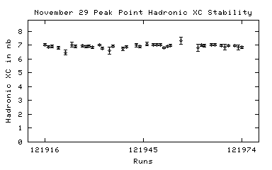
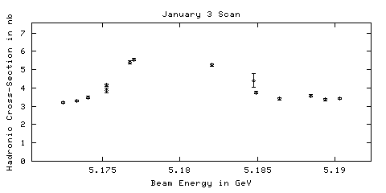

November 29 Scan
121887 11/29/2001 00:17 DataTaking 5.18941 1275.34 3.43 +/- 0.11
121888 n/a n/a DataTaking n/a n/a 0.00 +/- 0.00
121889 11/29/2001 01:25 DataTaking 5.17340 1176.58 3.13 +/- 0.10
121890 11/29/2001 02:29 DataTaking 5.18648 1167.51 3.39 +/- 0.11
121891 11/29/2001 07:52 DataTaking 5.17551 197.67 4.16 +/- 0.34
121892 11/29/2001 08:06 DataTaking 5.17551 1102.25 3.99 +/- 0.14
121893 11/29/2001 08:45 SmallCal 5.17551 0.00 n/a
121894 n/a n/a DataTaking n/a n/a 3.99 +/- 0.14
121895 11/29/2001 09:00 DataTaking 5.18138 1556.08 5.98 +/- 0.17
121896 n/a n/a DataTaking n/a n/a 6.02 +/- 0.16
121897 11/29/2001 10:04 DataTaking 5.18341 1548.25 4.31 +/- 0.13
121898 11/29/2001 11:14 DataTaking 5.17741 1568.99 5.46 +/- 0.15
November 29 Continuum Point
121899 11/29/2001 12:38 DataTaking 5.16508 1260.93 3.08 +/- 0.10
121900 11/29/2001 13:34 SmallCal 5.16508 0.00 n/a
121901 11/29/2001 13:39 DataTaking 5.16483 1162.79 3.15 +/- 0.11
121902 11/29/2001 14:35 DataTaking 5.16483 433.70 3.01 +/- 0.19
121903 11/29/2001 15:33 DataTaking 5.16486 1149.53 3.36 +/- 0.11
121904 11/29/2001 16:48 DataTaking 5.16489 1380.27 3.14 +/- 0.10
121905 11/29/2001 17:44 DataTaking 5.16483 1253.62 3.16 +/- 0.11
121906 11/29/2001 18:39 DataTaking 5.16483 675.37 3.18 +/- 0.16
121907 n/a n/a DataTaking n/a n/a 3.21 +/- 0.15
121908 11/29/2001 19:42 DataTaking 5.16486 0.00 n/a
121909 11/29/2001 19:51 DataTaking 5.16486 181.67 2.61 +/- 0.29
121910 11/29/2001 20:24 SmallCal 5.16486 0.00 n/a
121911 11/29/2001 20:43 DataTaking 5.16486 1284.27 3.16 +/- 0.10
121912 11/29/2001 21:39 DataTaking 5.16486 1325.32 3.08 +/- 0.10
121913 n/a n/a DataTaking n/a n/a 3.04 +/- 0.10
121914 11/29/2001 23:05 DataTaking 5.16486 524.52 2.97 +/- 0.15
121915 11/29/2001 23:32 DataTaking 5.16483 1326.79 3.12 +/- 0.10
November 29 Peak Point

121916 11/30/2001 00:47 DataTaking 5.17917 1446.96 6.66 +/- 0.18
121917 11/30/2001 01:52 DataTaking 5.17923 1622.33 6.49 +/- 0.16
121918 11/30/2001 03:04 DataTaking 5.17921 1403.89 6.64 +/- 0.18
121919 n/a n/a DataTaking n/a n/a 6.60 +/- 0.18
121920 11/30/2001 04:34 DataTaking 5.17923 1175.21 6.46 +/- 0.18
121921 11/30/2001 05:23 SmallCal 5.17923 0.00 n/a
121922 11/30/2001 05:29 DataTaking 5.17923 0.14 6.46 +/- 0.18
121923 n/a n/a n/a n/a n/a n/a
121924 11/30/2001 05:57 DataTaking 5.17922 345.56 6.77 +/- 0.34
121925 11/30/2001 06:19 DataTaking 5.17923 1348.99 6.76 +/- 0.18
121926 11/30/2001 07:14 DataTaking 5.17922 n/a n/a
121927 11/30/2001 08:23 DataTaking 5.17936 1611.51 6.77 +/- 0.16
121928 11/30/2001 10:02 DataTaking 5.17914 2067.95 6.74 +/- 0.15
121929 11/30/2001 12:58 DataTaking 5.17934 2021.23 6.71 +/- 0.15
121930 11/30/2001 14:20 DataTaking 5.17916 1953.56 6.64 +/- 0.16
121931 11/30/2001 15:38 SmallCal 5.17916 n/a n/a
121932 11/30/2001 15:43 DataTaking 5.17913 2001.70 6.61 +/- 0.15
121933 11/30/2001 17:06 DataTaking 5.17915 2015.21 6.45 +/- 0.15
121934 11/30/2001 18:26 SmallCal 5.17915 0.00 n/a
121935 11/30/2001 18:32 DataTaking 5.17918 152.27 5.90 +/- 0.51
121936 11/30/2001 18:41 DataTaking 5.17918 1465.67 6.52 +/- 0.17
121937 n/a n/a n/a n/a n/a n/a
121938 11/30/2001 20:01 DataTaking 5.17919 35.53 n/a
121939 11/30/2001 20:29 DataTaking 5.17919 634.36 6.07 +/- 0.23
121940 11/30/2001 21:08 DataTaking 5.17914 2160.96 6.44 +/- 0.14
121941 n/a n/a DataTaking n/a n/a 6.43 +/- 0.14
121942 11/30/2001 23:01 DataTaking 5.17918 24.41 0.00 +/- 0.00
121943 11/30/2001 23:12 DataTaking 5.17919 846.85 7.24 +/- 0.24
121944 11/30/2001 23:55 DataTaking 5.17915 1521.42 6.52 +/- 0.18
121945 12/01/2001 00:57 DataTaking 5.17915 n/a 0.00 +/- 0.00
121946 12/01/2001 01:23 DataTaking 5.17918 476.30 6.21 +/- 0.31
121947 12/01/2001 01:43 SmallCal 5.17918 0.00 n/a
121948 12/01/2001 02:00 DataTaking 5.17918 1971.89 6.73 +/- 0.15
121949 12/01/2001 03:18 DataTaking 5.17915 2111.62 6.70 +/- 0.15
121950 12/01/2001 04:44 DataTaking 5.17918 1974.49 6.71 +/- 0.15
121951 12/01/2001 06:08 DataTaking 5.17918 2187.07 6.51 +/- 0.15
121952 12/01/2001 07:38 DataTaking 5.17923 2193.07 6.53 +/- 0.15
121953 12/01/2001 09:04 DataTaking 5.17925 1222.68 6.87 +/- 0.22
121954 12/01/2001 10:16 DataTaking 5.17922 n/a n/a
121955 n/a n/a DataTaking n/a n/a n/a
121956 12/01/2001 11:29 DataTaking 5.17922 176.44 6.88 +/- 0.50
121957 n/a n/a DataTaking n/a n/a 7.04 +/- 0.48
121958 12/01/2001 12:42 SmallCal 5.17922 0.00 n/a
121959 n/a n/a DataTaking n/a n/a n/a
121960 n/a n/a DataTaking n/a n/a n/a
121961 12/01/2001 13:18 DataTaking 5.17926 181.43 7.08 +/- 0.51
121962 12/01/2001 13:30 DataTaking 5.17923 1546.05 6.92 +/- 0.17
121963 12/01/2001 14:40 DataTaking 5.17927 879.89 6.49 +/- 0.24
121964 12/01/2001 15:10 DataTaking 5.17924 411.15 6.48 +/- 0.24
121965 12/01/2001 15:27 DataTaking 5.17926 1086.82 6.64 +/- 0.19
121966 12/01/2001 16:21 DataTaking 5.17923 2568.11 6.75 +/- 0.14
121967 12/01/2001 17:59 DataTaking 5.17926 n/a 7.05 +/- 0.31
121968 12/01/2001 18:31 DataTaking 5.17927 1539.70 6.66 +/- 0.17
121969 12/01/2001 19:38 DataTaking 5.17926 272.00 7.09 +/- 0.51
121970 12/01/2001 19:58 DataTaking 5.17927 2600.49 6.76 +/- 0.14
121971 12/01/2001 21:38 DataTaking 5.17927 9.89 n/a
121972 12/01/2001 21:49 DataTaking 5.17927 2194.60 6.67 +/- 0.15
121973 12/01/2001 23:17 DataTaking 5.17927 286.99 6.06 +/- 0.43
121974 12/01/2001 23:41 DataTaking 5.17927 1818.25 6.49 +/- 0.15
121975 12/02/2001 01:10 DataTaking 5.17927 2635.84 6.49 +/- 0.16
121976 12/02/2001 03:04 DataTaking 5.17930 2586.30 6.75 +/- 0.14
121977 n/a n/a DataTaking n/a n/a 6.76 +/- 0.14
121978 12/02/2001 05:23 SmallCal 5.17930 0.00 n/a
121979 12/02/2001 06:29 DataTaking n/a 0.00 0.00 +/- 0.00
121980 12/02/2001 06:39 DataTaking n/a n/a n/a
121981 12/02/2001 10:00 DataTaking 5.17929 112.60 6.17 +/- 0.76
121982 n/a n/a DataTaking n/a n/a 6.33 +/- 0.66
121983 12/02/2001 10:10 SmallCal 5.17929 0.00 n/a
121984 12/02/2001 10:23 DataTaking 5.17929 25.51 0.00 +/- 0.00
121985 12/02/2001 10:27 DataTaking 5.17929 1987.56 6.76 +/- 0.15
121986 12/02/2001 11:57 DataTaking 5.17930 2271.92 6.52 +/- 0.13
121987 12/02/2001 13:34 DataTaking 5.17929 2245.07 6.74 +/- 0.14
121988 12/02/2001 15:06 DataTaking 5.17929 216.16 6.76 +/- 0.14
121989 12/02/2001 15:21 DataTaking 5.17929 1803.97 6.56 +/- 0.15
121990 12/02/2001 16:37 SmallCal 5.17929 0.00 n/a
121991 12/02/2001 16:42 DataTaking 5.17930 141.01 7.17 +/- 0.64
121992 12/02/2001 16:49 DataTaking 5.17932 2268.11 6.63 +/- 0.14
121993 12/02/2001 18:19 DataTaking 5.17929 2337.32 6.81 +/- 0.14
121994 12/02/2001 19:57 DataTaking 5.17929 286.08 7.16 +/- 0.52
121995 12/02/2001 20:26 DataTaking 5.17932 2577.48 6.76 +/- 0.14
121996 12/02/2001 22:05 DataTaking 5.17928 2488.22 6.70 +/- 0.14
121997 12/02/2001 23:43 DataTaking 5.17929 822.88 6.63 +/- 0.23
121998 12/03/2001 00:22 SmallCal 5.17929 0.00 n/a
121999 12/03/2001 00:28 DataTaking 5.17931 2311.21 6.68 +/- 0.14
122000 n/a n/a DataTaking n/a n/a n/a
122001 12/03/2001 02:56 DataTaking 5.17934 1128.68 6.84 +/- 0.16
122002 n/a n/a DataTaking n/a n/a 6.82 +/- 0.16
122003 12/03/2001 04:14 DataTaking 5.17932 2519.95 6.73 +/- 0.13
122004 12/03/2001 05:49 SmallCal 5.17932 0.00 n/a
122005 12/03/2001 05:54 DataTaking 5.17928 40.79 6.74 +/- 0.13
122006 12/03/2001 06:08 DataTaking 5.17936 2338.08 6.74 +/- 0.14
122007 12/03/2001 07:45 DataTaking 5.17932 531.62 6.68 +/- 0.34
122008 12/03/2001 18:33 CosmicRun 0.00000 103.26 0.00 +/- 0.00
122009 12/03/2001 18:41 CosmicRun 0.00000 146.47 0.00 +/- 0.00
122010 12/03/2001 21:26 CosmicRun 0.00000 1.18 0.00 +/- 0.00
122011 12/03/2001 21:34 SmallCal 0.00000 0.00 n/a
122012 12/03/2001 22:20 SmallCal 0.00000 0.00 n/a
122013 12/04/2001 10:20 SmallCal 0.00000 0.00 n/a
122014 12/04/2001 10:32 SmallCal 0.00000 0.00 n/a
122015 12/04/2001 10:40 DRBigCal 0.00000 0.03 n/a
122016 12/04/2001 11:07 SVXBigCal 0.00000 0.00 n/a
122017 n/a n/a CCBigCal n/a n/a n/a
122018 12/04/2001 12:27 CCBigCal 0.00000 0.00 n/a
122019 12/04/2001 12:33 CCBigCal 0.00000 0.00 n/a
122020 12/04/2001 15:41 CosmicRun 0.00000 1.18 0.00 +/- 0.00
122021 12/04/2001 17:10 CosmicRun 0.00000 1.18 0.00 +/- 0.00
122022 12/04/2001 17:26 CosmicRun 0.00000 1.18 0.00 +/- 0.00
122023 12/04/2001 18:02 CosmicRun 0.00000 0.03 0.00 +/- 0.00
122024 12/04/2001 18:55 SmallCal 0.00000 n/a n/a
122025 12/04/2001 19:29 CosmicRun 0.00000 0.08 0.00 +/- 0.00
122026 12/04/2001 19:47 CosmicRun 0.00000 0.08 0.00 +/- 0.00
122027 12/04/2001 20:14 CosmicRun 0.00000 0.05 0.00 +/- 0.00
122028 12/04/2001 20:32 CosmicRun 0.00000 0.03 0.00 +/- 0.00
122029 12/04/2001 20:53 CosmicRun 0.00000 0.03 0.00 +/- 0.00
122030 12/04/2001 21:36 CosmicRun 0.00000 0.11 0.00 +/- 0.00
122031 12/04/2001 22:00 CosmicRun 0.00000 0.00 0.00 +/- 0.00
122032 12/04/2001 22:21 CosmicRun 0.00000 0.03 0.00 +/- 0.00
122033 12/04/2001 22:55 CosmicRun 0.00000 0.00 0.00 +/- 0.00
122034 12/04/2001 23:07 CosmicRun 0.00000 0.05 0.00 +/- 0.00
122035 12/04/2001 23:29 CosmicRun 0.00000 0.03 0.00 +/- 0.00
122036 12/04/2001 23:52 CosmicRun 0.00000 0.11 0.00 +/- 0.00
122037 12/05/2001 00:15 CosmicRun 0.00000 0.00 0.00 +/- 0.00
122038 12/05/2001 00:41 CosmicRun 0.00000 0.00 0.00 +/- 0.00
122039 12/05/2001 01:03 CosmicRun 0.00000 0.00 0.00 +/- 0.00
122040 12/05/2001 01:27 CosmicRun 0.00000 0.00 0.00 +/- 0.00
122041 n/a n/a CosmicRun n/a n/a 0.00 +/- 0.00
122042 n/a n/a n/a n/a n/a n/a
122043 12/05/2001 02:24 CosmicRun 0.00000 0.11 0.00 +/- 0.00
122044 12/05/2001 02:47 CosmicRun 0.00000 0.05 0.00 +/- 0.00
122045 12/05/2001 03:23 CosmicRun 0.00000 0.05 0.00 +/- 0.00
122046 12/05/2001 03:55 CosmicRun 0.00000 0.00 0.00 +/- 0.00
122047 12/05/2001 04:18 CosmicRun 0.00000 0.03 0.00 +/- 0.00
122048 12/05/2001 04:57 CosmicRun 0.00000 0.08 0.00 +/- 0.00
122049 12/05/2001 05:19 CosmicRun 0.00000 0.08 0.00 +/- 0.00
122050 12/05/2001 16:57 SmallCal 0.00000 0.00 n/a
122051 12/05/2001 17:02 CosmicRun 0.00000 0.05 0.00 +/- 0.00
122052 12/05/2001 17:09 CosmicRun 0.00000 8.14 n/a
122053 12/05/2001 17:27 CosmicRun 0.00000 1.18 0.00 +/- 0.00
122054 12/05/2001 18:44 DataTaking 5.17941 154.47 6.78 +/- 0.49
122055 12/05/2001 18:58 DataTaking 5.17941 66.85 8.51 +/- 0.78
122056 12/05/2001 19:12 DataTaking 5.17941 82.49 6.76 +/- 0.59
122057 12/05/2001 19:19 DataTaking 5.17921 100.85 7.01 +/- 0.62
122058 12/05/2001 19:47 DRBigCal 5.17921 0.00 n/a
122059 n/a n/a n/a n/a n/a n/a
122060 12/05/2001 20:08 CosmicRun 5.17921 0.11 0.00 +/- 0.00
122061 12/05/2001 20:25 CosmicRun 5.17921 0.22 37.02 +/- 30.22
122062 12/05/2001 20:41 DRBigCal 5.17921 0.11 n/a
December 6 Scan
122063 12/05/2001 20:56 DataTaking 5.18931 173.29 3.48 +/- 0.28
122064 12/05/2001 22:51 DataTaking 5.16473 465.07 3.17 +/- 0.16
122065 n/a n/a n/a n/a n/a n/a
122066 12/05/2001 23:25 DataTaking 5.16477 427.07 3.04 +/- 0.17
122067 12/06/2001 00:19 SmallCal 0.00000 n/a n/a
122068 12/06/2001 00:26 DataTaking 5.18934 4.25 0.00 +/- 0.00
122069 12/06/2001 00:29 DataTaking 5.18937 961.21 3.55 +/- 0.11
122070 12/06/2001 01:33 DataTaking 5.17333 1393.75 3.38 +/- 0.10
122071 12/06/2001 02:41 DataTaking 5.18642 1435.07 3.65 +/- 0.10
122072 12/06/2001 03:49 DataTaking 5.17539 1370.71 3.77 +/- 0.11
122073 12/06/2001 04:56 DataTaking 5.18141 1472.11 6.02 +/- 0.15
122074 12/06/2001 06:04 DataTaking 5.18334 1420.05 4.44 +/- 0.12
122075 n/a n/a DataTaking n/a n/a 4.45 +/- 0.12
122076 12/06/2001 07:12 DataTaking 5.17728 1414.14 5.27 +/- 0.14
122077 12/06/2001 08:16 DataTaking 5.18141 1082.30 5.92 +/- 0.18
122078 12/06/2001 08:57 SmallCal 5.18141 0.00 n/a
December 6 Peak Point (more is coming...)
122079 12/06/2001 09:09 DataTaking 5.17939 2030.36 6.76 +/- 0.14
December 6 Continuum Point
122080 12/06/2001 11:50 DataTaking 5.16473 1566.41 3.15 +/- 0.08
122081 12/06/2001 13:08 DataTaking 5.16476 1766.36 3.05 +/- 0.08
122082 12/06/2001 14:27 DataTaking 5.16476 236.16 3.31 +/- 0.37
122083 12/06/2001 14:51 DataTaking 5.16479 1180.88 3.16 +/- 0.09
122084 12/06/2001 15:57 SmallCal 5.16479 0.00 n/a
122085 12/06/2001 16:05 DataTaking 5.16476 1068.66 3.10 +/- 0.09
122086 12/06/2001 17:00 DataTaking 5.16476 10.00 3.09 +/- 0.09
122087 n/a n/a DataTaking n/a n/a 2.80 +/- 0.54
122088 12/06/2001 17:11 SmallCal 5.16476 0.00 n/a
122089 12/06/2001 17:26 DataTaking 5.16476 n/a 3.10 +/- 0.10
122090 12/06/2001 18:26 DataTaking 5.16476 110.77 3.60 +/- 0.41
122091 12/06/2001 18:59 DataTaking 5.16477 1668.38 3.17 +/- 0.08
December 6 Peak Point
122092 12/06/2001 20:35 DataTaking 5.17939 1564.63 6.71 +/- 0.14
122093 12/06/2001 22:02 DataTaking 5.17943 1113.12 6.67 +/- 0.15
122094 12/06/2001 23:27 DataTaking 5.17946 1246.96 7.04 +/- 0.18
122095 12/07/2001 00:25 SmallCal 5.17946 0.00 n/a
122096 12/07/2001 00:32 SmallCal 5.17946 0.00 n/a
122097 12/07/2001 00:39 DataTaking 5.17939 1309.84 6.59 +/- 0.17
122098 12/07/2001 01:49 DataTaking 5.17945 1594.44 6.78 +/- 0.16
122099 12/07/2001 02:56 DataTaking 5.17942 1956.00 6.66 +/- 0.15
122100 12/07/2001 04:20 DataTaking 5.17946 172.47 7.57 +/- 0.68
122101 12/07/2001 04:38 DataTaking 5.17946 1948.55 6.69 +/- 0.14
122102 12/07/2001 06:00 DataTaking 5.17945 2005.29 6.69 +/- 0.14
122103 12/07/2001 07:22 SmallCal 5.17946 0.00 n/a
122104 12/07/2001 07:28 DataTaking 5.17948 47.70 6.67 +/- 0.83
122105 12/07/2001 07:32 DataTaking 5.17948 1671.04 6.48 +/- 0.15
122106 12/07/2001 09:00 SmallCal 5.17948 0.00 n/a
122107 12/07/2001 09:02 SmallCal 5.17948 0.00 n/a
122108 12/07/2001 09:09 DataTaking 5.17949 255.07 6.45 +/- 0.46
122109 12/07/2001 09:21 DataTaking 5.17952 1070.27 6.51 +/- 0.18
122110 12/07/2001 10:13 DataTaking 5.17950 18.00 n/a
122111 12/07/2001 10:32 DataTaking 5.17949 1285.64 6.47 +/- 0.16
122112 12/07/2001 11:35 DataTaking 5.17949 2048.49 6.75 +/- 0.14
122113 12/07/2001 13:38 SmallCal 5.17949 0.00 n/a
122114 12/07/2001 14:09 DataTaking 5.17948 535.26 6.97 +/- 0.33
122115 12/07/2001 14:33 DataTaking 5.17946 15.75 n/a
122116 12/07/2001 14:47 DataTaking 5.17947 588.14 7.36 +/- 0.28
122117 12/07/2001 15:17 DataTaking 5.17947 1860.68 6.51 +/- 0.14
122118 12/07/2001 16:43 DataTaking 5.17947 1515.64 6.45 +/- 0.16
122119 12/07/2001 17:54 DataTaking 5.17949 n/a n/a
122120 12/07/2001 18:17 DataTaking 5.17948 n/a n/a
122121 12/07/2001 18:32 DataTaking 5.17952 679.67 6.61 +/- 0.21
122122 12/07/2001 19:34 DataTaking 5.17952 1.29 0.00 +/- 0.00
122123 12/07/2001 19:48 DataTaking 5.17952 1895.37 6.66 +/- 0.14
122124 12/07/2001 21:13 DataTaking 5.17952 2011.75 6.86 +/- 0.15
122125 12/07/2001 22:37 DataTaking 5.17951 2139.97 6.78 +/- 0.14
122126 12/08/2001 00:06 DataTaking 5.17954 2016.44 6.69 +/- 0.14
122127 12/08/2001 01:29 DataTaking 5.17951 2088.16 6.62 +/- 0.14
122128 12/08/2001 02:53 DataTaking 5.17954 2102.82 6.84 +/- 0.14
122129 12/08/2001 04:17 DataTaking 5.17952 2042.96 6.86 +/- 0.14
122130 12/08/2001 05:36 SmallCal 5.17952 0.00 n/a
122131 12/08/2001 05:38 SmallCal 5.17952 0.00 n/a
122132 12/08/2001 07:00 DataTaking 5.17953 1670.25 6.77 +/- 0.16
122133 12/08/2001 08:08 DataTaking 5.17956 2097.29 6.35 +/- 0.13
122134 12/08/2001 09:32 DataTaking 5.17953 489.86 7.37 +/- 0.35
122135 12/08/2001 10:08 DataTaking 5.17979 3.26 7.27 +/- 0.34
122136 12/08/2001 10:12 DataTaking 5.17943 1982.79 6.63 +/- 0.14
122137 12/08/2001 11:34 DataTaking 5.17948 1859.18 6.59 +/- 0.14
122138 12/08/2001 12:55 DataTaking 5.17949 1736.16 6.49 +/- 0.14
122139 12/08/2001 14:20 DataTaking 5.17952 1929.07 6.73 +/- 0.14
122140 12/08/2001 16:51 DataTaking 5.17951 1926.52 n/a
122141 12/08/2001 18:23 DataTaking 5.17955 2105.95 n/a
122142 12/08/2001 18:46 DataTaking 5.17954 2303.70 6.72 +/- 0.13
122143 12/08/2001 20:22 DataTaking 5.17951 2205.56 6.59 +/- 0.14
122144 12/08/2001 21:48 SmallCal 5.17951 0.00 n/a
122145 12/08/2001 21:58 DataTaking 5.17954 201.97 6.72 +/- 0.48
122146 12/08/2001 22:08 DataTaking 5.17957 2032.03 6.64 +/- 0.14
122147 12/08/2001 23:35 DataTaking 5.17951 1648.33 6.89 +/- 0.17
122148 12/09/2001 00:47 DataTaking 5.17950 2311.26 6.66 +/- 0.13
122149 12/09/2001 02:26 DataTaking 5.17950 3.78 6.67 +/- 0.13
122150 12/09/2001 02:30 DataTaking 5.17953 0.00 6.51 +/- 1.49
122151 12/09/2001 02:42 DataTaking 5.17953 59.40 7.17 +/- 0.90
122152 12/09/2001 02:48 DataTaking 5.17950 1686.38 6.93 +/- 0.15
122153 12/09/2001 04:09 DataTaking 5.17950 2119.67 6.68 +/- 0.13
122154 12/09/2001 05:47 DataTaking 5.17954 342.71 6.96 +/- 0.39
122155 n/a n/a DataTaking n/a n/a 6.98 +/- 0.37
122156 12/09/2001 06:31 DataTaking 5.17955 511.10 6.31 +/- 0.26
122157 n/a n/a DataTaking n/a n/a 6.33 +/- 0.25
122158 12/09/2001 07:30 DataTaking 5.17954 310.57 6.93 +/- 0.33
122159 12/09/2001 07:55 DataTaking 5.17955 2086.00 6.54 +/- 0.13
122160 12/09/2001 09:58 DataTaking 5.17955 709.40 6.42 +/- 0.25
122161 12/09/2001 10:26 DataTaking 5.17949 970.55 6.65 +/- 0.18
122162 12/09/2001 11:20 DataTaking 5.17949 89.07 6.49 +/- 0.46
122163 12/09/2001 11:35 DataTaking 5.17947 2220.14 7.01 +/- 0.13
122164 12/09/2001 13:11 DataTaking 5.17947 2189.23 6.64 +/- 0.13
122165 n/a n/a SmallCal n/a 0.00 n/a
122166 12/09/2001 14:55 DataTaking 5.17948 983.92 6.58 +/- 0.21
122167 12/09/2001 15:45 DataTaking 5.17952 751.34 6.64 +/- 0.22
122168 12/09/2001 16:26 DataTaking 5.17952 2519.75 6.78 +/- 0.13
122169 12/09/2001 18:08 DataTaking 5.17952 2538.85 6.70 +/- 0.13
122170 12/09/2001 19:46 DataTaking 5.17951 2398.30 6.58 +/- 0.13
122171 12/09/2001 21:13 SmallCal 5.17951 0.00 n/a
122172 12/09/2001 21:54 DataTaking 5.17954 2571.81 6.61 +/- 0.13
122173 12/09/2001 23:32 DataTaking 5.17954 2625.15 6.60 +/- 0.12
122174 12/10/2001 01:15 DataTaking 5.17957 2513.73 6.99 +/- 0.14
122175 n/a n/a DataTaking n/a n/a 6.95 +/- 0.14
122176 12/10/2001 03:13 DataTaking 5.17957 1694.99 6.61 +/- 0.15
122177 12/10/2001 04:17 DataTaking 5.17958 138.69 6.93 +/- 0.50
122178 12/10/2001 04:32 DataTaking 5.17957 2515.92 6.94 +/- 0.13
122179 12/10/2001 06:10 DataTaking 5.17955 2880.27 6.71 +/- 0.12
122180 12/10/2001 08:03 SmallCal 5.17955 0.00 n/a
122181 12/10/2001 08:42 CosmicRun 5.17955 1.18 6.74 +/- 0.12
122182 12/10/2001 09:29 DataTaking 5.95782 1.18 0.00 +/- 0.00
122183 12/10/2001 10:34 CosmicRun 5.95782 0.03 n/a
122184 12/10/2001 11:06 CosmicRun 5.95782 0.00 0.00 +/- 0.00
122185 12/10/2001 11:56 DataTaking 6.47226 169.73 n/a
122186 12/10/2001 12:36 CosmicRun 6.47226 2.03 n/a
122187 12/10/2001 12:57 DataTaking 5.89885 0.05 0.00 +/- 0.00
122188 12/10/2001 13:26 CosmicRun 5.89885 0.00 n/a
122189 12/10/2001 13:45 DataTaking 6.02902 0.00 n/a
122190 n/a n/a DataTaking n/a n/a n/a
122191 12/10/2001 15:36 DataTaking 0.00000 91.97 n/a
122192 12/10/2001 15:54 DataTaking 0.00000 134.19 n/a
122193 12/10/2001 16:49 DataTaking 0.00000 0.00 0.00 +/- 0.00
122194 12/10/2001 17:04 DataTaking 0.00000 527.78 n/a
122195 12/10/2001 17:55 DataTaking 0.00000 64.55 n/a
122196 12/10/2001 18:17 DataTaking 0.00000 9.89 0.00 +/- 0.00
122197 12/10/2001 18:50 DataTaking 6.50285 0.05 0.00 +/- 0.00
122198 12/11/2001 10:20 SmallCal 6.50285 0.00 n/a
122199 12/11/2001 10:31 DRBigCal 6.50285 0.00 n/a
122200 12/11/2001 10:51 SVXBigCal 6.50285 0.00 n/a
122201 12/11/2001 11:02 CCBigCal 6.50285 0.00 n/a
122202 12/11/2001 11:50 CCBigCal 6.50285 0.00 n/a
122203 12/11/2001 12:55 CCBigCal 6.50285 0.00 n/a
122204 12/11/2001 12:57 CCBigCal 6.50285 n/a n/a
122205 12/11/2001 13:32 CCBigCal 6.50285 0.00 n/a
122206 n/a n/a n/a n/a n/a n/a
122207 12/11/2001 14:07 SmallCal 6.50285 n/a n/a
122208 12/11/2001 14:37 CosmicRun 6.50285 0.03 n/a
122209 12/11/2001 15:05 CosmicRun 6.50285 0.00 0.00 +/- 0.00
122210 12/11/2001 16:00 DataTaking 4.39391 0.00 n/a
122211 12/11/2001 16:40 CosmicRun 4.39391 0.00 n/a
122212 12/11/2001 16:43 CosmicRun 4.39391 n/a n/a
122213 n/a n/a DataTaking n/a n/a n/a
122214 n/a n/a DataTaking n/a n/a n/a
122215 n/a n/a n/a n/a n/a n/a
122216 n/a n/a n/a n/a n/a n/a
122217 n/a n/a n/a n/a n/a n/a
122218 n/a n/a n/a n/a n/a n/a
122219 n/a n/a n/a n/a n/a n/a
122220 12/11/2001 22:53 CosmicRun 4.39391 0.05 n/a
122221 n/a n/a n/a n/a n/a n/a
122222 12/11/2001 23:19 CosmicRun 4.39391 0.00 0.00 +/- 0.00
122223 12/11/2001 23:25 CosmicRun 4.39391 0.00 n/a
122224 12/12/2001 00:02 CosmicRun 4.39391 39.84 n/a
122225 12/12/2001 00:22 DataTaking 1.81157 65.97 0.00 +/- 0.00
BEGINNING OF DATA 17
122226 12/12/2001 00:39 DataTaking 1.81158 0.77 0.00 +/- 0.00
122227 12/12/2001 00:48 DataTaking 1.81158 9.12 0.00 +/- 0.00
122228 12/12/2001 01:54 DataTaking 1.81158 n/a n/a
122229 12/12/2001 02:52 DataTaking 1.81158 n/a n/a
122230 12/12/2001 03:14 DataTaking 1.81158 0.90 0.00 +/- 0.00
122231 12/12/2001 03:22 DataTaking 1.81158 4.55 6.30 +/- 6.50
122232 12/12/2001 04:02 DataTaking 1.81157 15.18 6.30 +/- 3.75
122233 12/12/2001 05:20 DataTaking 1.81158 1.29 11.86 +/- 8.87
122234 12/12/2001 05:52 DataTaking 1.81158 6.49 2.73 +/- 1.38
122235 12/12/2001 06:51 DataTaking 1.81157 9.75 2.73 +/- 1.38
122236 12/12/2001 16:52 DataTaking 5.16011 0.03 0.00 +/- 0.00
122237 12/12/2001 17:42 DataTaking 5.17920 0.03 0.00 +/- 0.00
122238 12/12/2001 17:55 CosmicRun 5.17920 0.00 0.00 +/- 0.00
122239 12/12/2001 19:02 SmallCal 5.17920 0.00 n/a
122240 12/12/2001 19:05 SmallCal 5.17920 0.00 n/a
122241 12/12/2001 19:35 SmallCal 5.17920 0.00 n/a
122242 12/12/2001 20:31 CosmicRun 5.17920 438.11 5.09 +/- 0.26
122243 12/12/2001 21:11 CosmicRun 5.17920 251.86 51.70 +/- 12.56
122244 12/12/2001 23:27 DataTaking 5.17736 10.55 n/a
December 13 Scan
122245 12/12/2001 23:40 DataTaking 5.17740 1046.88 5.65 +/- 0.22
122246 12/13/2001 00:52 DataTaking 5.18234 1371.86 5.13 +/- 0.18
122247 12/13/2001 02:05 DataTaking 5.19042 1807.15 3.21 +/- 0.11
122248 12/13/2001 05:54 DataTaking 5.17233 5.64 3.22 +/- 0.11
122249 12/13/2001 06:04 DataTaking 5.17233 1064.00 2.84 +/- 0.14
122250 n/a n/a DataTaking n/a n/a 2.81 +/- 0.13
122251 12/13/2001 07:37 DataTaking 5.18835 968.66 3.21 +/- 0.15
122252 12/13/2001 08:37 DataTaking 5.17435 1243.53 3.46 +/- 0.14
122253 12/13/2001 09:41 DataTaking 5.18535 1413.89 3.55 +/- 0.14
122254 n/a n/a DataTaking n/a n/a 3.54 +/- 0.14
122255 n/a n/a n/a n/a n/a n/a
122256 12/13/2001 11:15 DataTaking 5.17725 859.89 5.53 +/- 0.24
122257 12/13/2001 11:56 RandomLow 5.17726 0.00 5.53 +/- 0.23
122258 12/13/2001 12:00 CosmicRun 5.17726 0.00 n/a
122259 12/13/2001 12:29 DataTaking 5.17938 n/a 0.00 +/- 0.00
122260 n/a n/a n/a n/a n/a n/a
122261 12/13/2001 12:45 DataTaking 5.17941 n/a 7.17 +/- 0.90
122262 n/a n/a DataTaking n/a n/a n/a
December 13 Peak Point (more is coming...)
122263 12/13/2001 13:23 DataTaking 5.17950 289.86 7.00 +/- 0.44
December 13 Continuum Point
122264 12/13/2001 13:53 DataTaking 5.16467 804.93 2.52 +/- 0.16
122265 12/13/2001 14:31 SmallCal 5.16469 0.00 n/a
122266 12/13/2001 14:32 SmallCal 5.16469 0.00 n/a
122267 12/13/2001 14:38 DataTaking 5.16469 n/a n/a
122268 12/13/2001 15:09 DataTaking 5.16466 1743.56 3.08 +/- 0.10
122269 12/13/2001 16:55 DataTaking 5.16468 1654.41 3.00 +/- 0.11
122270 12/13/2001 18:14 SmallCal 5.16468 0.00 n/a
122271 12/13/2001 18:25 DataTaking 5.16470 n/a n/a
122272 12/13/2001 18:48 DataTaking 5.16470 904.66 3.19 +/- 0.14
122273 12/13/2001 19:44 DataTaking 5.16468 1869.42 3.03 +/- 0.10
December 13 Peak Point
122274 12/13/2001 21:17 DataTaking 5.17936 2001.89 6.88 +/- 0.18
122275 12/13/2001 22:50 DataTaking 5.17934 991.62 6.65 +/- 0.26
122276 12/13/2001 23:28 DataTaking 5.17935 716.77 7.10 +/- 0.30
122277 12/14/2001 00:05 DataTaking 5.17934 2232.25 6.47 +/- 0.17
122278 12/14/2001 01:36 DataTaking 5.17939 554.49 6.89 +/- 0.38
122279 12/14/2001 01:57 DataTaking 5.17933 1173.75 6.61 +/- 0.23
122280 12/14/2001 02:48 DataTaking 5.17930 2235.78 6.51 +/- 0.18
122281 12/14/2001 04:09 DataTaking 5.17934 426.93 6.98 +/- 0.50
122282 12/14/2001 04:31 DataTaking 5.17934 42.77 6.81 +/- 0.46
122283 12/14/2001 04:44 DataTaking 5.17934 1577.37 6.84 +/- 0.22
122284 n/a n/a n/a n/a n/a n/a
122285 12/14/2001 07:15 DataTaking 5.17937 2091.64 6.68 +/- 0.18
122286 12/14/2001 08:39 DataTaking 5.17936 1924.49 6.31 +/- 0.18
122287 12/14/2001 10:02 DataTaking 5.17937 1655.75 6.99 +/- 0.20
122288 12/14/2001 11:14 DataTaking 5.17937 2087.78 6.72 +/- 0.19
122289 12/14/2001 12:33 DataTaking 5.17935 1524.27 6.69 +/- 0.24
122290 12/14/2001 13:31 DataTaking 5.17935 38.25 n/a
122291 12/14/2001 14:08 DataTaking 5.17938 952.33 6.52 +/- 0.27
122292 12/14/2001 14:48 DataTaking 5.17938 512.38 6.05 +/- 0.74
122293 12/14/2001 15:22 DataTaking 5.17938 1733.18 6.62 +/- 0.20
122294 12/14/2001 16:34 DataTaking 5.17934 n/a n/a
122295 12/14/2001 18:28 SmallCal 5.17934 n/a n/a
122296 12/14/2001 19:22 DataTaking 5.17935 2095.26 6.62 +/- 0.18
122297 12/14/2001 20:37 DataTaking 5.17936 2274.38 6.59 +/- 0.19
122298 12/14/2001 21:59 DataTaking 5.17935 2262.30 6.84 +/- 0.21
122299 12/14/2001 23:40 DataTaking 5.17934 0.00 6.85 +/- 0.21
122300 12/14/2001 23:44 DataTaking 5.17934 1425.29 6.64 +/- 0.27
122301 12/15/2001 00:40 DataTaking 5.17933 2315.12 6.90 +/- 0.23
122302 12/15/2001 02:03 SmallCal 5.17933 0.00 n/a
122303 n/a n/a SmallCal n/a n/a n/a
122304 12/15/2001 02:54 SmallCal 5.17933 n/a n/a
122305 12/15/2001 03:05 DataTaking 5.17935 367.89 6.82 +/- 0.42
122306 12/15/2001 03:26 DataTaking 5.17933 2358.77 6.82 +/- 0.19
122307 12/15/2001 04:50 DataTaking 5.17936 2188.41 6.79 +/- 0.22
122308 12/15/2001 06:08 SmallCal 5.17936 0.00 n/a
122309 12/15/2001 06:20 DataTaking 5.17938 1970.00 7.00 +/- 0.20
122310 12/15/2001 07:39 DataTaking 5.17941 2004.49 6.36 +/- 0.19
122311 12/15/2001 09:03 DataTaking 5.17942 17.07 6.37 +/- 0.19
122312 12/15/2001 09:49 DataTaking 5.17940 1778.36 6.63 +/- 0.19
122313 12/15/2001 11:33 DataTaking 5.17941 1698.36 6.56 +/- 0.21
122314 12/15/2001 13:10 DataTaking 5.17940 2124.27 6.43 +/- 0.18
122315 12/15/2001 14:37 DataTaking 5.17944 2235.15 6.43 +/- 0.19
122316 12/15/2001 16:10 DataTaking 5.17942 32.55 8.51 +/- 1.11
122317 12/15/2001 16:14 DataTaking 5.17942 488.85 6.94 +/- 0.50
122318 n/a n/a DataTaking n/a n/a 7.00 +/- 0.48
122319 12/15/2001 16:52 DataTaking 5.17944 1873.59 6.89 +/- 0.20
122320 n/a n/a n/a n/a n/a n/a
122321 12/15/2001 18:30 DataTaking 5.17944 2222.52 6.59 +/- 0.19
122322 12/15/2001 19:55 DataTaking 5.17947 2453.56 6.68 +/- 0.17
122323 12/15/2001 21:37 DataTaking 5.17950 2461.86 6.81 +/- 0.19
122324 n/a n/a n/a n/a n/a n/a
122325 12/15/2001 23:14 DataTaking 5.17950 0.00 n/a
122326 12/15/2001 23:48 DataTaking 5.17950 1680.79 6.55 +/- 0.21
122327 12/16/2001 00:53 SmallCal 5.17950 0.00 n/a
122328 n/a n/a DataTaking n/a n/a n/a
122329 n/a n/a n/a n/a n/a n/a
122330 12/16/2001 02:55 DataTaking 5.17950 1919.64 6.32 +/- 0.20
122331 12/16/2001 04:24 DataTaking 5.17950 177.89 7.26 +/- 0.91
122332 12/16/2001 04:56 DataTaking 5.17954 62.25 7.34 +/- 0.77
122333 12/16/2001 05:36 DataTaking 5.17955 302.57 0.00 +/- 0.00
122334 12/16/2001 06:04 DataTaking 5.17952 239.23 0.00 +/- 0.00
122335 12/16/2001 06:14 DataTaking 5.17954 107.15 n/a
122336 12/16/2001 06:44 DataTaking 5.17952 639.01 7.18 +/- 0.45
122337 12/16/2001 08:58 DataTaking 5.17956 1.34 0.00 +/- 0.00
122338 12/16/2001 09:17 DataTaking 5.17959 0.36 n/a
122339 12/16/2001 09:45 DataTaking 5.17958 527.10 6.95 +/- 0.43
122340 12/16/2001 10:30 DataTaking 5.17955 5.95 7.06 +/- 0.42
122341 12/16/2001 10:33 DataTaking 5.17952 n/a 7.13 +/- 0.63
122342 12/16/2001 11:32 DataTaking 5.17955 378.11 6.69 +/- 0.48
122343 n/a n/a DataTaking n/a n/a 6.76 +/- 0.45
122344 12/16/2001 12:22 DataTaking 5.17952 55.10 0.00 +/- 0.00
122345 12/16/2001 12:37 DataTaking 5.17954 88.90 8.69 +/- 1.13
122346 12/16/2001 12:53 DataTaking 5.17954 0.55 8.20 +/- 0.92
122347 12/16/2001 13:00 DataTaking 5.17957 390.49 6.72 +/- 0.59
122348 12/16/2001 13:35 DataTaking 5.17955 4.60 7.09 +/- 0.55
122349 12/16/2001 13:38 DataTaking 5.17955 571.56 6.45 +/- 0.40
122350 12/16/2001 14:28 DataTaking 5.17953 676.30 7.40 +/- 0.42
122351 12/16/2001 15:23 DataTaking 5.17954 441.73 7.42 +/- 0.54
122352 12/16/2001 16:09 DataTaking 5.17952 116.52 7.62 +/- 0.52
122353 12/16/2001 16:31 DataTaking 5.17959 8.16 5.45 +/- 0.67
122354 12/16/2001 20:21 DataTaking 5.17944 1592.77 6.54 +/- 0.20
122355 12/16/2001 21:40 DataTaking 5.17947 168.06 6.78 +/- 0.84
122356 12/16/2001 22:02 DataTaking 5.17941 1685.73 6.56 +/- 0.21
122357 12/16/2001 23:16 DataTaking 5.17946 2364.79 6.46 +/- 0.18
122358 12/17/2001 00:53 SmallCal 5.17946 0.00 n/a
122359 12/17/2001 00:55 SmallCal 5.17946 0.00 n/a
122360 12/17/2001 01:03 DataTaking 5.17947 2080.49 6.79 +/- 0.32
122361 12/17/2001 02:32 DataTaking 5.17950 27.18 n/a
122362 12/17/2001 03:04 DataTaking 5.17950 169.04 9.28 +/- 1.23
122363 12/17/2001 03:20 DataTaking 5.17950 1072.79 6.84 +/- 0.30
122364 12/17/2001 04:08 SmallCal 5.17950 0.00 n/a
122365 12/17/2001 04:22 DataTaking 5.17946 708.71 6.75 +/- 0.42
122366 12/17/2001 04:49 DataTaking 5.17946 1310.96 6.49 +/- 0.27
122367 12/17/2001 05:52 DataTaking 5.17949 66.05 6.40 +/- 0.26
122368 n/a n/a DataTaking n/a n/a n/a
122369 12/17/2001 06:35 DataTaking 5.17949 632.08 6.00 +/- 0.37
122370 12/17/2001 07:16 SmallCal 5.17949 0.00 n/a
122371 12/17/2001 07:54 SmallCal 5.17949 n/a n/a
122372 12/17/2001 08:39 CCBigCal 5.17949 0.00 n/a
122373 12/17/2001 08:56 CCBigCal 5.17949 0.00 n/a
122374 12/17/2001 09:02 DRBigCal 5.17949 0.00 n/a
122375 n/a n/a DRBigCal n/a 0.00 n/a
122376 n/a n/a DRBigCal n/a 0.00 n/a
122377 12/17/2001 10:34 DRBigCal 5.17949 n/a n/a
122378 12/17/2001 11:02 DRBigCal 5.17949 0.00 n/a
122379 12/17/2001 11:32 DRBigCal 0.00000 0.03 n/a
122380 12/17/2001 11:49 SVXBigCal 0.00000 0.00 n/a
122381 12/17/2001 12:12 SmallCal 0.00000 n/a n/a
122382 12/17/2001 15:15 SmallCal 0.00000 n/a n/a
122383 12/17/2001 15:44 DataTaking 5.17000 0.03 n/a
122384 12/17/2001 15:55 RandomLow 5.17000 0.03 0.00 +/- 0.00
122385 12/17/2001 16:17 RandomLow 5.17000 0.00 0.00 +/- 0.00
122386 12/17/2001 16:41 CosmicRun 5.17000 0.00 0.00 +/- 0.00
122387 12/17/2001 20:57 SmallCal 5.17000 0.00 n/a
122388 12/17/2001 21:06 CosmicRun 5.17000 20.47 0.00 +/- 0.00
122389 12/17/2001 21:31 DataTaking 1.82269 127.29 0.00 +/- 0.00
122390 n/a n/a DataTaking n/a n/a n/a
122391 n/a n/a n/a n/a n/a n/a
122392 n/a n/a n/a n/a n/a n/a
122393 12/18/2001 18:33 CosmicRun 1.82269 0.00 n/a
122394 n/a n/a DataTaking n/a n/a n/a
122395 12/18/2001 19:43 DataTaking 1.82283 0.11 n/a
122396 12/18/2001 22:18 DataTaking 1.82185 1810.05 n/a
122397 n/a n/a DataTaking n/a n/a n/a
122398 n/a n/a CCBigCal n/a n/a n/a
122399 n/a n/a n/a n/a n/a n/a
122400 n/a n/a CCBigCal n/a n/a n/a
122401 12/19/2001 10:32 CCBigCal 0.00000 n/a n/a
122402 n/a n/a n/a n/a n/a n/a
122403 12/19/2001 19:24 SmallCal 0.00000 n/a n/a
122404 12/19/2001 19:36 CosmicRun 0.00000 0.05 0.00 +/- 0.00
122405 12/19/2001 20:26 CosmicRun 0.00000 7.97 0.00 +/- 0.00
122406 12/19/2001 20:33 SmallCal 0.00000 0.00 n/a
122407 12/19/2001 20:44 CosmicRun 0.00000 8.11 0.00 +/- 0.00
122408 n/a n/a DataTaking n/a n/a n/a
December 20 Scan
122409 12/19/2001 23:37 DataTaking 5.17730 848.85 5.47 +/- 0.19
122410 12/20/2001 00:46 DataTaking 5.18241 1504.33 4.87 +/- 0.17
122411 12/20/2001 02:00 DataTaking 5.19036 1390.66 3.15 +/- 0.12
122412 12/20/2001 03:14 DataTaking 5.17244 1445.04 3.01 +/- 0.12
122413 12/20/2001 04:32 DataTaking 5.18783 n/a n/a
122414 12/20/2001 06:44 DataTaking 5.18536 1440.14 3.33 +/- 0.13
122415 12/20/2001 08:16 DataTaking 5.17730 n/a 5.69 +/- 0.20
122416 12/20/2001 09:46 DataTaking 5.17451 762.41 3.53 +/- 0.18
(n/a in the luminosity was due to mistakes in closing EndRun properly...)
122417 12/20/2001 11:26 SmallCal 5.17451 n/a n/a
December 20 Continuum Point
122418 12/20/2001 14:35 DataTaking 5.16480 1652.36 3.18 +/- 0.13
122419 12/20/2001 15:47 SmallCal 5.16480 0.00 n/a
122420 12/20/2001 16:27 DataTaking 5.16481 1743.40 3.14 +/- 0.10
122421 12/20/2001 17:49 DataTaking 5.16481 8.63 3.11 +/- 0.10
122422 12/20/2001 18:21 DataTaking 5.16481 988.38 3.05 +/- 0.14
122423 12/20/2001 19:11 DataTaking 5.16484 1893.26 3.24 +/- 0.11
122424 12/20/2001 20:33 DataTaking 5.16481 1934.63 3.19 +/- 0.11
122425 12/20/2001 21:56 DataTaking 5.16481 1904.71 3.11 +/- 0.11
122426 12/20/2001 23:19 DataTaking 5.16481 1886.96 3.25 +/- 0.12
122427 12/21/2001 00:44 DataTaking 5.16481 1673.23 3.12 +/- 0.12
122428 12/21/2001 02:08 DataTaking 5.16482 1892.88 3.07 +/- 0.11
122429 12/21/2001 03:33 DataTaking 5.16481 697.67 3.22 +/- 0.21
122430 12/21/2001 04:15 DataTaking 5.16487 1790.90 3.07 +/- 0.11
122431 12/21/2001 05:35 SmallCal 5.16487 0.00 n/a
122432 12/21/2001 05:43 DataTaking 5.16485 1688.99 3.22 +/- 0.13
122433 12/21/2001 07:01 DataTaking 5.16488 939.34 3.06 +/- 0.15
122434 12/21/2001 07:55 DataTaking 5.16485 445.67 2.78 +/- 0.18
122435 12/21/2001 08:37 DataTaking 5.17934 n/a 7.02 +/- 0.44
122436 n/a n/a n/a n/a n/a n/a
December 20 Peak Point
122437 12/21/2001 09:39 DataTaking 5.17938 289.64 6.13 +/- 0.38
122438 12/21/2001 10:13 DataTaking 5.17939 n/a n/a
122439 12/21/2001 10:58 DataTaking 5.17938 672.22 6.63 +/- 0.29
122440 12/21/2001 11:41 DataTaking 5.17938 2038.00 6.66 +/- 0.18
122441 12/21/2001 13:04 DataTaking 5.17943 1563.48 7.45 +/- 0.67
122442 12/21/2001 14:15 DataTaking 5.17941 112.11 8.39 +/- 0.77
122443 12/21/2001 14:28 DataTaking 5.17938 2069.21 6.61 +/- 0.19
122444 12/21/2001 16:01 DataTaking 5.17944 0.00 0.00 +/- 0.00
122445 12/21/2001 16:19 DataTaking 5.17944 1266.71 6.71 +/- 0.24
122446 n/a n/a DataTaking n/a n/a 6.67 +/- 0.23
122447 12/21/2001 17:30 DataTaking 5.17953 1035.78 6.73 +/- 0.28
122448 12/21/2001 18:17 DataTaking 5.17954 2106.55 6.45 +/- 0.19
122449 12/21/2001 19:38 DataTaking 5.17951 n/a n/a
122450 12/21/2001 20:21 DataTaking 5.17955 2024.16 6.53 +/- 0.19
122451 12/21/2001 21:47 DataTaking 5.17952 1776.96 2.33 +/- 0.07
122452 12/21/2001 22:58 DataTaking 5.17952 2199.95 6.55 +/- 0.18
122453 12/22/2001 00:23 DataTaking 5.17950 2095.62 6.53 +/- 0.17
122454 12/22/2001 01:51 DataTaking 5.17950 2043.95 6.42 +/- 0.18
122455 12/22/2001 03:13 DataTaking 5.17955 2100.55 6.63 +/- 0.19
122456 n/a n/a n/a n/a n/a n/a
122457 12/22/2001 04:48 DataTaking 5.17953 0.16 0.00 +/- 0.00
122458 n/a n/a n/a n/a n/a n/a
122459 n/a n/a n/a n/a n/a n/a
122460 12/22/2001 10:33 DRBigCal 5.17953 38.66 n/a
122461 12/22/2001 10:51 DataTaking 5.17955 1612.79 6.40 +/- 0.21
122462 12/22/2001 11:53 DataTaking 5.17956 401.07 7.27 +/- 0.46
122463 12/22/2001 12:19 DataTaking 5.17953 2588.77 6.56 +/- 0.18
122464 12/22/2001 13:56 DataTaking 5.17953 2582.79 6.83 +/- 0.18
122465 12/22/2001 15:31 DataTaking 5.17950 2632.90 6.59 +/- 0.17
122466 12/22/2001 17:13 DataTaking 5.17950 2419.42 6.67 +/- 0.19
122467 12/22/2001 18:42 DataTaking 5.17953 2701.51 7.18 +/- 0.19
122468 12/22/2001 20:17 DataTaking 5.17952 2687.37 6.63 +/- 0.18
122469 12/22/2001 21:51 DataTaking 5.17950 2292.60 6.51 +/- 0.20
122470 12/22/2001 23:18 DataTaking 5.17950 190.55 6.05 +/- 0.74
122471 12/22/2001 23:30 DataTaking 5.17953 2727.15 7.08 +/- 0.19
122472 12/23/2001 01:07 DataTaking 5.17953 2639.75 6.09 +/- 0.20
122473 12/23/2001 02:43 DataTaking 5.17950 2693.92 6.57 +/- 0.21
122474 12/23/2001 04:23 SmallCal 5.17950 0.00 n/a
122475 n/a n/a DataTaking n/a n/a n/a
122476 12/23/2001 07:26 DataTaking 5.17947 85.70 5.85 +/- 0.71
122477 n/a n/a n/a n/a n/a 6.28 +/- 0.65
122478 n/a n/a n/a n/a n/a n/a
122479 n/a n/a n/a n/a n/a n/a
122480 12/23/2001 08:03 DataTaking 5.17953 1407.40 7.04 +/- 0.27
122481 12/23/2001 08:54 DataTaking 5.17947 208.08 6.71 +/- 0.59
122482 12/23/2001 09:07 SmallCal 5.17947 0.00 n/a
122483 n/a n/a SmallCal n/a 0.00 n/a
122484 12/23/2001 09:24 DataTaking 5.17953 n/a n/a
122485 12/23/2001 10:31 DataTaking 5.17950 490.55 7.12 +/- 0.36
122486 12/23/2001 10:59 DataTaking 5.17950 2639.62 6.85 +/- 0.17
122487 12/23/2001 12:35 DataTaking 5.17947 2684.85 6.65 +/- 0.17
122488 12/23/2001 14:10 DataTaking 5.17947 2620.08 6.66 +/- 0.17
122489 12/23/2001 15:45 DataTaking 5.17947 2455.18 6.68 +/- 0.19
122490 12/23/2001 18:29 SmallCal 5.17947 n/a n/a
122491 12/23/2001 18:42 DataTaking 5.17933 410.66 0.00 +/- 0.00
122492 12/23/2001 19:07 DataTaking 5.17951 659.07 6.85 +/- 0.32
122493 12/23/2001 19:38 DataTaking 5.17954 2321.89 6.85 +/- 0.20
122494 12/23/2001 21:03 SmallCal 5.17954 0.00 n/a
122495 n/a n/a SmallCal n/a 0.00 n/a
122496 12/23/2001 21:47 DataTaking 5.17952 1596.58 6.71 +/- 0.20
122497 12/23/2001 22:50 DataTaking 5.17949 2734.00 6.77 +/- 0.17
122498 12/24/2001 00:26 DataTaking 5.17954 2538.38 6.61 +/- 0.17
122499 12/24/2001 02:04 DataTaking 5.17949 19.51 n/a
122500 12/24/2001 02:24 DataTaking 5.17949 1964.14 6.59 +/- 0.19
122501 12/24/2001 03:40 DataTaking 5.17949 2698.14 6.74 +/- 0.18
122502 12/24/2001 05:16 DataTaking 5.17946 2729.04 6.61 +/- 0.18
122503 12/24/2001 06:52 DataTaking 5.17948 2474.30 6.61 +/- 0.20
122504 12/24/2001 08:16 SmallCal 5.17948 0.00 n/a
122505 12/24/2001 08:28 DataTaking 5.17950 663.12 6.78 +/- 0.42
122506 12/24/2001 08:53 SmallCal 5.17950 0.00 n/a
122507 12/24/2001 09:07 DataTaking 5.17950 1121.86 6.90 +/- 0.22
122508 12/24/2001 10:03 DataTaking 5.17947 2712.52 6.45 +/- 0.16
122509 12/24/2001 11:39 DataTaking 5.17947 2694.36 6.43 +/- 0.17
122510 12/24/2001 13:15 DataTaking 5.17950 2699.62 6.23 +/- 0.16
122511 12/24/2001 14:50 DataTaking 5.17950 2202.52 6.88 +/- 0.20
122512 12/24/2001 16:16 SmallCal 5.17950 0.00 n/a
122513 12/24/2001 16:23 SmallCal 5.17950 0.00 n/a
122514 12/24/2001 16:31 DataTaking 5.17944 2316.33 6.93 +/- 0.20
122515 12/24/2001 17:56 SmallCal 5.17945 0.00 n/a
122516 12/24/2001 18:08 SmallCal 5.17945 0.00 n/a
122517 n/a n/a DataTaking n/a n/a 6.96 +/- 0.20
122518 n/a n/a DataTaking n/a n/a 0.00 +/- 0.00
122519 12/24/2001 18:29 DataTaking 5.17948 328.36 6.60 +/- 0.82
122520 12/24/2001 18:46 DataTaking 5.17947 731.15 6.62 +/- 0.37
122521 12/24/2001 19:13 DataTaking 5.17950 1125.62 7.11 +/- 0.32
122522 12/24/2001 19:55 DataTaking 5.17948 1330.85 4.93 +/- 0.18
122523 12/24/2001 20:49 DataTaking 5.17951 2717.29 5.07 +/- 0.13
122524 12/24/2001 22:24 DataTaking 5.17948 2220.19 6.82 +/- 0.21
122525 12/25/2001 00:03 DataTaking 5.17951 2529.89 6.80 +/- 0.18
122526 12/25/2001 01:36 DataTaking 5.17954 2631.40 6.70 +/- 0.19
122527 12/25/2001 03:11 DataTaking 5.17953 1874.38 6.67 +/- 0.22
122528 n/a n/a DataTaking n/a n/a n/a
122529 n/a n/a n/a n/a n/a n/a
122530 12/25/2001 04:56 DataTaking 5.17953 697.04 6.19 +/- 0.34
122531 12/25/2001 05:27 SmallCal 5.17953 0.00 n/a
122532 12/25/2001 05:35 DataTaking 5.17953 1891.95 6.66 +/- 0.21
122533 12/25/2001 07:01 DataTaking 5.17953 961.15 7.16 +/- 0.32
122534 12/25/2001 07:47 DataTaking 5.17953 564.96 6.67 +/- 0.28
122535 n/a n/a DataTaking n/a 1347.48 5.63 +/- 0.20
December 25 Scan
122536 12/25/2001 09:54 DataTaking 5.19045 1300.44 3.26 +/- 0.13
122537 12/25/2001 10:57 DataTaking 5.17431 1359.97 3.42 +/- 0.14
122538 12/25/2001 12:01 DataTaking 5.18236 1310.11 4.91 +/- 0.18
122539 12/25/2001 13:00 DataTaking 5.17240 1316.03 3.03 +/- 0.13
122540 12/25/2001 14:01 DataTaking 5.18535 1250.77 3.28 +/- 0.14
122541 12/25/2001 15:04 DataTaking 5.18846 1224.85 3.56 +/- 0.15
122542 12/25/2001 16:04 DataTaking 5.17743 1148.49 5.81 +/- 0.23
122543 12/25/2001 16:56 SmallCal 5.17743 0.00 n/a
122544 12/25/2001 17:06 DataTaking 5.19046 25.75 5.83 +/- 0.23
122545 12/25/2001 17:11 DataTaking 5.19046 1177.73 3.01 +/- 0.15
122546 12/25/2001 18:09 DataTaking 5.17451 164.63 3.00 +/- 0.14
122547 12/25/2001 18:27 DataTaking 5.17449 2.08 3.42 +/- 0.51
122548 12/25/2001 18:30 DataTaking 5.17449 1172.30 3.74 +/- 0.16
122549 12/25/2001 19:24 DataTaking 5.18240 1401.59 4.88 +/- 0.18
122550 12/25/2001 20:26 DataTaking 5.17246 1346.05 3.26 +/- 0.13
122551 12/25/2001 21:29 DataTaking 5.18554 1329.78 3.22 +/- 0.14
122552 n/a n/a n/a n/a n/a n/a
122553 12/25/2001 22:44 DataTaking 5.18846 0.14 n/a
122554 n/a n/a DataTaking n/a n/a n/a
122555 12/25/2001 23:28 DataTaking 5.18845 846.82 3.42 +/- 0.16
122556 12/26/2001 00:22 DataTaking 5.17739 888.33 5.69 +/- 0.24
122557 12/26/2001 01:11 DataTaking 5.19046 873.78 3.35 +/- 0.17
122558 12/26/2001 01:53 SmallCal 5.19046 0.00 n/a
122559 12/26/2001 02:11 DataTaking 5.17432 1192.30 3.28 +/- 0.14
122560 12/26/2001 03:11 DataTaking 5.18237 1140.71 4.84 +/- 0.18
122561 n/a n/a n/a n/a 1176.66 3.07 +/- 0.14
122562 12/26/2001 05:08 DataTaking 5.18548 1136.90 3.32 +/- 0.14
122563 12/26/2001 06:07 DataTaking 5.18843 1112.63 3.15 +/- 0.14
122564 12/26/2001 07:05 DataTaking 5.17742 1265.92 5.61 +/- 0.21
122565 12/26/2001 10:47 SmallCal 0.00000 n/a n/a
122566 12/26/2001 10:54 DataTaking 5.19965 27.21 0.00 +/- 0.00
December 25 High-energy tail point
 122567 12/26/2001 11:01 DataTaking 5.19968 61.86 3.55 +/- 0.75
122568 12/26/2001 11:11 DataTaking 5.19968 1065.89 3.16 +/- 0.13
122569 12/26/2001 12:03 DataTaking 5.19965 947.42 3.23 +/- 0.16
122570 12/26/2001 12:53 DataTaking 5.19968 1703.45 3.17 +/- 0.11
122571 12/26/2001 14:13 DataTaking 5.19968 1679.67 3.14 +/- 0.11
122572 12/26/2001 15:33 DataTaking 5.19967 1738.11 3.18 +/- 0.11
122573 12/26/2001 16:53 DataTaking 5.19968 1751.51 3.38 +/- 0.12
122574 12/26/2001 18:13 DataTaking 5.19974 1323.95 3.28 +/- 0.13
122575 12/26/2001 19:12 DataTaking 5.19975 1202.96 3.19 +/- 0.13
122567 12/26/2001 11:01 DataTaking 5.19968 61.86 3.55 +/- 0.75
122568 12/26/2001 11:11 DataTaking 5.19968 1065.89 3.16 +/- 0.13
122569 12/26/2001 12:03 DataTaking 5.19965 947.42 3.23 +/- 0.16
122570 12/26/2001 12:53 DataTaking 5.19968 1703.45 3.17 +/- 0.11
122571 12/26/2001 14:13 DataTaking 5.19968 1679.67 3.14 +/- 0.11
122572 12/26/2001 15:33 DataTaking 5.19967 1738.11 3.18 +/- 0.11
122573 12/26/2001 16:53 DataTaking 5.19968 1751.51 3.38 +/- 0.12
122574 12/26/2001 18:13 DataTaking 5.19974 1323.95 3.28 +/- 0.13
122575 12/26/2001 19:12 DataTaking 5.19975 1202.96 3.19 +/- 0.13
122567 12/26/2001 11:01 DataTaking 5.19968 61.86 3.55 +/- 0.75
122568 12/26/2001 11:11 DataTaking 5.19968 1065.89 3.16 +/- 0.13
122569 12/26/2001 12:03 DataTaking 5.19965 947.42 3.23 +/- 0.16
122570 12/26/2001 12:53 DataTaking 5.19968 1703.45 3.17 +/- 0.11
122571 12/26/2001 14:13 DataTaking 5.19968 1679.67 3.14 +/- 0.11
122572 12/26/2001 15:33 DataTaking 5.19967 1738.11 3.18 +/- 0.11
122573 12/26/2001 16:53 DataTaking 5.19968 1751.51 3.38 +/- 0.12
122574 12/26/2001 18:13 DataTaking 5.19974 1323.95 3.28 +/- 0.13
122575 12/26/2001 19:12 DataTaking 5.19975 1202.96 3.19 +/- 0.13
December 25 Peak Point (more is coming...)
122576 12/26/2001 20:50 DataTaking 5.17934 366.90 6.33 +/- 0.45
122577 12/26/2001 21:08 DataTaking 5.17936 1348.41 6.39 +/- 0.26
122578 12/26/2001 21:54 DataTaking 5.17952 107.10 6.63 +/- 0.82
122579 12/26/2001 22:03 DataTaking 5.17939 450.00 6.46 +/- 0.56
122580 12/26/2001 22:57 DataTaking 5.16502 94.08 n/a
122581 n/a n/a DataTaking n/a n/a n/a
122582 12/27/2001 00:30 SmallCal 5.16502 n/a n/a
122583 n/a n/a DataTaking n/a n/a n/a
122584 12/27/2001 00:41 DataTaking 5.16514 64.41 0.00 +/- 0.00
December 25 Continuum Point
122585 12/27/2001 01:07 DataTaking 5.16514 1722.74 3.04 +/- 0.10
122586 12/27/2001 02:31 DataTaking 5.16517 1676.33 2.95 +/- 0.10
122587 12/27/2001 03:52 DataTaking 5.16517 1687.73 3.02 +/- 0.10
122588 12/27/2001 05:17 DataTaking 5.16517 7.10 3.05 +/- 0.10
122589 12/27/2001 05:25 DataTaking 5.16519 n/a n/a
122590 12/27/2001 06:51 DataTaking 5.16519 1439.01 2.94 +/- 0.12
122591 12/27/2001 08:20 SmallCal 5.16519 0.00 n/a
122592 n/a n/a n/a n/a n/a n/a
122593 12/27/2001 08:44 DataTaking 5.16519 711.48 3.42 +/- 0.17
122594 12/27/2001 09:24 DataTaking 5.16516 779.10 3.47 +/- 0.20
122595 12/27/2001 10:02 DataTaking 5.16516 177.59 3.45 +/- 0.39
122596 12/27/2001 10:15 DataTaking 5.16518 1331.51 3.07 +/- 0.13
122597 12/27/2001 11:26 SmallCal 5.16518 0.00 n/a
122598 12/27/2001 11:43 DataTaking 5.16518 20.93 n/a
122599 12/27/2001 12:06 DataTaking 5.16519 424.63 2.93 +/- 0.19
122600 12/27/2001 12:34 DataTaking 5.16518 111.70 4.15 +/- 0.48
122601 12/27/2001 12:43 DataTaking 5.16498 0.00 3.79 +/- 0.34
122602 12/27/2001 12:51 DataTaking 5.16518 1753.34 3.00 +/- 0.10
122603 12/27/2001 14:11 DataTaking 5.16519 1848.08 2.99 +/- 0.10
122604 12/27/2001 15:33 DataTaking 5.16524 1803.18 3.13 +/- 0.10
122605 12/27/2001 16:53 DataTaking 5.16531 1806.14 3.31 +/- 0.11
122606 12/27/2001 18:13 DataTaking 5.16528 575.73 3.21 +/- 0.21
122607 12/27/2001 18:50 DataTaking 5.17934 20.63 3.28 +/- 0.20
December 25 Peak Point
122608 12/27/2001 19:04 DataTaking 5.17937 1779.12 6.56 +/- 0.20
122609 n/a n/a DataTaking n/a n/a n/a
122610 12/27/2001 20:20 DataTaking 5.17940 1926.08 6.33 +/- 0.19
122611 12/27/2001 21:29 DataTaking 5.17942 34.52 n/a
122612 12/27/2001 21:59 DataTaking 5.17942 n/a n/a
122613 12/27/2001 22:21 DataTaking 5.17939 643.89 6.87 +/- 0.35
122614 12/27/2001 22:48 DataTaking 5.17942 2348.63 6.72 +/- 0.19
122615 12/28/2001 00:08 DataTaking 5.17942 2360.99 6.67 +/- 0.19
122616 12/28/2001 01:28 DataTaking 5.17942 2337.12 6.57 +/- 0.19
122617 12/28/2001 02:48 DataTaking 5.17938 1923.32 6.56 +/- 0.21
122618 12/28/2001 04:05 DataTaking 5.17942 2260.11 6.46 +/- 0.19
122619 12/28/2001 05:25 DataTaking 5.17942 2366.49 6.51 +/- 0.20
122620 12/28/2001 06:44 DataTaking 5.17942 2362.00 6.56 +/- 0.20
122621 12/28/2001 08:05 SmallCal 5.17942 0.00 n/a
122622 12/28/2001 08:12 DataTaking 5.17944 205.18 6.71 +/- 0.83
122623 12/28/2001 08:22 DataTaking 5.17945 1020.33 6.41 +/- 0.26
122624 n/a n/a DataTaking n/a n/a n/a
122625 12/28/2001 09:43 DataTaking 5.17945 1697.01 6.68 +/- 0.20
122626 12/28/2001 10:50 DataTaking 5.17942 2218.30 6.55 +/- 0.17
122627 12/28/2001 12:14 DataTaking 5.17942 161.26 7.48 +/- 0.67
122628 12/28/2001 13:06 DataTaking 5.17942 532.47 6.45 +/- 0.36
122629 12/28/2001 13:35 DataTaking 5.17942 2277.23 6.98 +/- 0.19
122630 12/28/2001 14:57 DataTaking 5.17943 2268.79 6.75 +/- 0.18
122631 12/28/2001 16:18 DataTaking 5.17939 573.59 6.58 +/- 0.58
122632 12/28/2001 16:43 DataTaking 5.17949 674.22 6.31 +/- 0.35
122633 12/28/2001 17:11 DataTaking 5.17952 4.16 6.26 +/- 0.33
122634 12/28/2001 17:14 DataTaking 5.17952 860.44 n/a
122635 12/28/2001 17:55 SmallCal 5.17952 n/a n/a
122636 n/a n/a n/a n/a n/a n/a
122637 n/a n/a CosmicRun n/a n/a n/a
122638 12/28/2001 18:25 DataTaking 5.17949 0.00 n/a
122639 n/a n/a DataTaking n/a n/a n/a
122640 12/28/2001 18:49 DataTaking 5.17949 1322.11 6.61 +/- 0.23
122641 12/28/2001 19:46 DataTaking 5.17952 2172.85 6.52 +/- 0.18
122642 12/28/2001 21:08 DataTaking 5.17952 2376.52 6.59 +/- 0.19
122643 12/28/2001 22:30 DataTaking 5.17949 2021.84 7.18 +/- 0.23
122644 12/28/2001 23:37 SmallCal 5.17949 0.00 n/a
122645 12/28/2001 23:53 DataTaking 5.17949 10.38 7.16 +/- 0.23
122646 12/29/2001 00:34 DataTaking 5.17949 1107.62 7.01 +/- 0.25
122647 12/29/2001 01:22 DataTaking 5.17952 902.49 6.63 +/- 0.31
122648 12/29/2001 01:53 DataTaking 5.17949 1209.34 7.36 +/- 0.35
122649 12/29/2001 02:41 DataTaking 5.17952 2354.08 6.45 +/- 0.18
122650 12/29/2001 04:00 DataTaking 5.17955 2183.48 6.79 +/- 0.20
122651 12/29/2001 05:25 DataTaking 5.17952 n/a n/a
122652 12/29/2001 05:44 DataTaking 5.17952 1582.22 6.51 +/- 0.22
122653 12/29/2001 06:42 DataTaking 5.17954 2406.38 6.60 +/- 0.18
122654 12/29/2001 08:06 DataTaking 5.17952 2078.36 6.95 +/- 0.22
122655 n/a n/a n/a n/a n/a n/a
122656 12/29/2001 09:28 SmallCal 5.17952 n/a n/a
122657 12/29/2001 10:02 DataTaking 5.17954 1277.67 6.75 +/- 0.25
122658 12/29/2001 10:55 DataTaking 5.17952 907.81 6.66 +/- 0.34
122659 12/29/2001 11:30 SmallCal 5.17952 0.00 n/a
122660 n/a n/a n/a n/a n/a n/a
122661 12/29/2001 12:17 DataTaking 5.17952 748.27 6.53 +/- 0.29
122662 12/29/2001 12:56 DataTaking 5.17949 17.73 n/a
122663 n/a n/a n/a n/a n/a n/a
122664 n/a n/a DataTaking n/a n/a n/a
122665 12/29/2001 13:53 DataTaking 5.17954 1662.41 6.75 +/- 0.22
122666 12/29/2001 15:00 SmallCal 5.17954 0.00 n/a
122667 12/29/2001 15:11 DataTaking 5.17952 1188.60 6.85 +/- 0.26
122668 12/29/2001 16:08 DataTaking 5.17955 123.42 8.57 +/- 1.12
122669 12/29/2001 16:18 DataTaking 5.17954 173.40 5.93 +/- 0.72
122670 n/a n/a DataTaking n/a n/a 6.09 +/- 0.55
122671 12/29/2001 16:35 SmallCal 5.17954 0.00 n/a
122672 12/29/2001 17:20 DataTaking 5.17954 2292.27 6.70 +/- 0.18
122673 12/29/2001 18:41 DataTaking 5.17957 2333.70 6.53 +/- 0.18
122674 12/29/2001 20:04 DataTaking 5.17957 2357.75 6.81 +/- 0.19
122675 12/29/2001 21:24 DataTaking 5.17957 2263.21 6.64 +/- 0.18
122676 12/29/2001 22:46 DataTaking 5.17958 2275.97 6.60 +/- 0.18
122677 12/30/2001 00:06 DataTaking 5.17954 2279.51 6.59 +/- 0.18
122678 12/30/2001 01:27 DataTaking 5.17956 18.05 n/a
122679 12/30/2001 02:18 DataTaking 5.17959 500.90 6.55 +/- 0.33
122680 12/30/2001 02:46 DataTaking 5.17960 283.31 6.53 +/- 0.33
122681 12/30/2001 03:03 DataTaking 5.17957 1563.56 6.59 +/- 0.21
122682 12/30/2001 04:07 DataTaking 5.17959 2329.26 6.89 +/- 0.19
122683 12/30/2001 05:35 DataTaking 5.17957 2238.90 7.59 +/- 0.23
122684 12/30/2001 06:58 DataTaking 5.17954 2379.23 6.63 +/- 0.20
122685 12/30/2001 08:24 DataTaking 5.17953 1339.95 6.97 +/- 0.28
122686 12/30/2001 09:07 DataTaking 5.17954 517.70 6.81 +/- 0.30
122687 12/30/2001 09:55 DataTaking 5.17956 1863.15 6.60 +/- 0.19
122688 12/30/2001 11:18 DataTaking 5.17957 238.33 6.60 +/- 0.58
122689 12/30/2001 11:56 DataTaking 5.17959 541.78 6.65 +/- 0.37
122690 12/30/2001 12:46 DataTaking 5.17954 2046.52 6.72 +/- 0.20
122691 12/30/2001 14:10 DataTaking 5.17956 2196.33 6.52 +/- 0.18
122692 12/30/2001 15:32 DataTaking 5.17954 2169.78 6.82 +/- 0.21
122693 12/30/2001 16:53 DataTaking 5.17955 1489.89 6.50 +/- 0.23
122694 n/a n/a n/a n/a n/a n/a
122695 12/30/2001 18:22 DataTaking 5.17956 2026.71 6.71 +/- 0.19
122696 12/30/2001 19:38 DataTaking 5.17956 1922.38 6.90 +/- 0.22
122697 12/30/2001 20:46 SmallCal 5.17956 0.00 n/a
122698 12/30/2001 21:00 DataTaking 5.17916 2163.89 6.59 +/- 0.19
122699 12/30/2001 22:18 DataTaking 5.17912 2292.63 6.71 +/- 0.19
122700 12/30/2001 23:39 DataTaking 5.17912 2262.55 6.76 +/- 0.19
122701 12/31/2001 00:57 DataTaking 5.17960 2001.37 6.83 +/- 0.43
122702 12/31/2001 02:22 DataTaking 5.17916 n/a 6.28 +/- 0.34
122703 12/31/2001 03:17 DataTaking 5.17915 488.27 7.34 +/- 0.38
122704 12/31/2001 03:48 DataTaking 5.17916 2208.11 6.78 +/- 0.19
122705 12/31/2001 05:09 DataTaking 5.17957 1619.86 6.97 +/- 0.22
122706 12/31/2001 08:28 DRBigCal 0.00000 47.95 n/a
122707 n/a n/a SmallCal n/a n/a n/a
122708 12/31/2001 08:51 DataTaking 5.17913 918.96 6.39 +/- 0.32
122709 12/31/2001 09:40 DataTaking 5.17916 55.01 7.43 +/- 0.94
122710 12/31/2001 10:10 DataTaking 5.17913 2182.03 6.67 +/- 0.20
122711 12/31/2001 11:33 DataTaking 5.17915 2062.82 6.60 +/- 0.20
122712 12/31/2001 13:09 DataTaking 5.17913 1677.64 6.64 +/- 0.21
122713 12/31/2001 14:18 DataTaking 5.17913 1942.66 n/a
122714 12/31/2001 15:38 DataTaking 5.17910 1669.70 6.66 +/- 0.24
122715 n/a n/a SmallCal n/a n/a n/a
122716 12/31/2001 17:04 SmallCal 5.17910 0.00 n/a
122717 n/a n/a SmallCal n/a 0.00 n/a
122718 12/31/2001 17:35 SmallCal 5.17910 0.00 n/a
122719 12/31/2001 17:43 DataTaking 5.17911 10.05 0.00 +/- 0.00
122720 12/31/2001 17:50 SmallCal 5.17911 0.00 n/a
122721 12/31/2001 18:00 DataTaking 5.17916 246.25 6.32 +/- 0.39
122722 12/31/2001 18:31 DataTaking 5.17904 2160.47 6.32 +/- 0.17
122723 12/31/2001 19:51 DataTaking 5.17906 2241.95 6.80 +/- 0.20
122724 12/31/2001 21:10 SmallCal 5.17906 0.00 n/a
122725 12/31/2001 21:17 SmallCal 5.17906 0.00 n/a
122726 12/31/2001 21:26 DataTaking 5.17908 1690.27 6.84 +/- 0.20
122727 12/31/2001 22:28 DataTaking 5.17909 2279.62 6.47 +/- 0.17
122728 12/31/2001 23:47 DataTaking 5.17909 1045.10 6.84 +/- 0.30
122729 01/01/2002 00:29 DataTaking 5.17953 2158.33 6.37 +/- 0.18
122730 01/01/2002 01:50 DataTaking 5.17912 2279.12 6.50 +/- 0.18
122731 01/01/2002 03:12 DataTaking 5.17908 2042.82 6.61 +/- 0.20
122732 01/01/2002 04:24 SmallCal 5.17908 0.00 n/a
122733 01/01/2002 04:36 DataTaking 5.17911 1588.38 6.81 +/- 0.22
122734 01/01/2002 05:57 DataTaking 5.17908 1854.99 6.56 +/- 0.19
122735 01/01/2002 07:05 DataTaking 5.17912 2291.51 6.71 +/- 0.18
122736 01/01/2002 08:28 DataTaking 5.17906 2364.63 6.59 +/- 0.18
122737 01/01/2002 09:54 DataTaking 5.17909 2308.82 6.88 +/- 0.18
122738 01/01/2002 11:58 DataTaking 5.17912 2181.10 6.94 +/- 0.18
122739 01/01/2002 13:21 DataTaking 5.17911 2355.64 6.90 +/- 0.19
122740 01/01/2002 14:42 DataTaking 5.17911 2296.47 6.97 +/- 0.19
122741 01/01/2002 16:02 DataTaking 5.17988 2029.23 6.57 +/- 0.18
122742 n/a n/a DataTaking n/a n/a 6.59 +/- 0.18
122743 01/01/2002 17:30 DataTaking 5.17901 2241.12 6.81 +/- 0.18
122744 01/01/2002 18:53 DataTaking 5.17904 2300.08 6.86 +/- 0.19
122745 01/01/2002 20:14 DataTaking 5.17909 2321.86 6.53 +/- 0.18
122746 01/01/2002 21:36 DataTaking 5.17907 2419.75 6.75 +/- 0.18
122747 01/01/2002 23:04 DataTaking 5.17910 2177.64 6.94 +/- 0.20
122748 01/02/2002 00:19 SmallCal 5.17910 0.00 n/a
122749 01/02/2002 00:36 DataTaking 5.17912 1817.04 6.83 +/- 0.19
122750 n/a n/a DataTaking n/a n/a n/a
122751 01/02/2002 02:14 DataTaking 5.17909 1290.60 6.88 +/- 0.22
122752 01/02/2002 03:09 DataTaking 5.17910 2167.92 6.91 +/- 0.18
122753 01/02/2002 04:28 DataTaking 5.17910 2313.64 6.71 +/- 0.17
122754 01/02/2002 05:50 DataTaking 5.17909 2281.12 6.16 +/- 0.16
122755 01/02/2002 07:11 DataTaking 5.17909 1565.62 6.55 +/- 0.22
122756 n/a n/a DataTaking n/a n/a 6.61 +/- 0.22
122757 01/02/2002 09:06 CCBigCal 5.17909 0.00 n/a
122758 01/02/2002 09:17 DRBigCal 5.17909 0.03 n/a
122759 01/02/2002 09:22 SmallCal 5.17909 0.00 n/a
122760 01/02/2002 09:40 SVXBigCal 5.17909 0.00 n/a
122761 n/a n/a n/a n/a n/a n/a
122762 n/a n/a n/a n/a n/a n/a
122763 01/02/2002 17:51 DataTaking 5.17701 0.05 n/a
122764 01/02/2002 18:15 DataTaking 5.17705 3.15 0.00 +/- 0.00
122765 01/02/2002 18:20 SmallCal 5.17705 0.00 n/a
January 3 Scan

122766 01/02/2002 18:32 DataTaking 5.17702 1222.71 5.54 +/- 0.20
122767 01/02/2002 19:30 DataTaking 5.19034 1395.10 3.52 +/- 0.14
122768 01/02/2002 20:32 DataTaking 5.17405 1474.66 3.59 +/- 0.14
122769 01/02/2002 21:34 DataTaking 5.18205 1365.95 4.92 +/- 0.18
122770 01/02/2002 22:34 DataTaking 5.17243 1372.38 3.09 +/- 0.13
122771 01/02/2002 23:36 DataTaking 5.18476 48.25 3.14 +/- 0.13
122772 01/02/2002 23:52 DataTaking 5.18490 1151.89 3.30 +/- 0.14
122773 01/03/2002 00:55 DataTaking 5.18843 1272.85 3.42 +/- 0.14
122774 n/a n/a DataTaking n/a n/a 3.42 +/- 0.14
122775 n/a n/a n/a n/a n/a n/a
122776 01/03/2002 02:29 DataTaking 5.17679 953.70 5.30 +/- 0.21
122777 01/03/2002 03:26 DataTaking 5.18936 1296.14 3.30 +/- 0.14
122778 01/03/2002 04:33 DataTaking 5.17335 1326.19 3.08 +/- 0.13
122779 01/03/2002 05:42 DataTaking 5.18641 1340.05 3.44 +/- 0.15
122780 01/03/2002 06:46 DataTaking 5.17528 285.62 2.98 +/- 0.33
122781 01/03/2002 06:58 DataTaking 5.17527 1109.73 4.00 +/- 0.19
122782 01/03/2002 07:42 SmallCal 5.17527 0.00 n/a
January 3 Continuum Point
122783 01/03/2002 07:57 DataTaking 5.16506 1386.41 3.01 +/- 0.10
122784 01/03/2002 09:18 DataTaking 5.16508 51.42 3.02 +/- 0.10
122785 01/03/2002 09:37 DataTaking 5.16508 n/a 3.20 +/- 0.13
122786 01/03/2002 11:19 DataTaking 5.16508 1085.59 3.17 +/- 0.13
122787 01/03/2002 12:12 DataTaking 5.16510 616.38 n/a
122788 01/03/2002 13:18 DataTaking 5.16510 0.30 0.00 +/- 0.00
122789 01/03/2002 13:42 DataTaking 5.16510 1600.85 3.04 +/- 0.11
122790 n/a n/a DataTaking n/a n/a 3.02 +/- 0.11
122791 01/03/2002 15:06 DataTaking 5.16460 9.23 0.00 +/- 0.00
122792 n/a n/a DataTaking n/a n/a 3.98 +/- 0.77
122793 n/a n/a DataTaking n/a n/a n/a
122794 01/03/2002 15:51 SmallCal 5.16460 0.00 n/a
122795 n/a n/a DataTaking n/a n/a n/a
122796 01/03/2002 16:38 DataTaking 5.16505 1897.92 3.10 +/- 0.10
122797 01/03/2002 17:57 DataTaking 5.16462 1658.47 3.13 +/- 0.12
122798 01/03/2002 19:20 DataTaking 5.16510 1689.97 3.26 +/- 0.11
122799 01/03/2002 20:43 DataTaking 5.16510 1794.00 3.21 +/- 0.11
122800 01/03/2002 22:12 DataTaking 5.16513 1672.63 3.13 +/- 0.11
122801 01/03/2002 23:29 DataTaking 5.16510 1622.60 3.07 +/- 0.11
122802 01/04/2002 00:52 DataTaking 5.16510 1930.88 3.11 +/- 0.12
122803 01/04/2002 02:17 DataTaking 5.16513 1855.18 3.21 +/- 0.11
122804 01/04/2002 03:40 DataTaking 5.16513 1849.42 3.13 +/- 0.12
122805 01/04/2002 05:04 DataTaking 5.16513 1551.15 3.23 +/- 0.13
122806 01/04/2002 06:13 SmallCal 5.16513 0.00 n/a
122807 01/04/2002 06:26 DataTaking 5.16510 0.00 3.22 +/- 0.12
122808 01/04/2002 06:35 DataTaking 5.16513 397.92 3.54 +/- 0.28
122809 01/04/2002 06:57 DataTaking 5.16513 1230.55 3.02 +/- 0.13
122810 01/04/2002 07:56 DataTaking 5.16513 1667.23 2.98 +/- 0.11
122811 n/a n/a DataTaking n/a n/a 3.00 +/- 0.11
January 3 Peak Point
122812 01/04/2002 09:29 DataTaking 5.17901 2120.47 6.52 +/- 0.20
122813 01/04/2002 10:47 DataTaking 5.17904 1834.00 6.63 +/- 0.23
122814 01/04/2002 11:55 SmallCal 5.17904 0.00 n/a
122815 01/04/2002 12:06 DataTaking 5.17905 2068.05 6.62 +/- 0.19
122816 01/04/2002 13:23 DataTaking 5.17907 1921.07 6.70 +/- 0.22
122817 01/04/2002 14:43 SmallCal 5.17907 n/a n/a
122818 01/04/2002 14:54 DataTaking 5.17904 n/a 0.00 +/- 0.00
122819 01/04/2002 15:23 DataTaking 5.17907 922.08 6.93 +/- 0.29
122820 01/04/2002 16:03 DataTaking 5.17904 2348.25 6.81 +/- 0.19
122821 01/04/2002 17:25 DataTaking 5.17906 2142.38 6.59 +/- 0.20
122822 01/04/2002 18:35 SmallCal 5.17906 0.00 n/a
122823 01/04/2002 18:48 DataTaking 5.17909 2309.23 6.88 +/- 0.19
122824 01/04/2002 20:07 DataTaking 5.17907 2372.58 6.48 +/- 0.18
122825 01/04/2002 21:28 DataTaking 5.17907 2343.48 6.65 +/- 0.19
122826 01/04/2002 22:49 DataTaking 5.17905 2295.73 6.45 +/- 0.19
122827 01/05/2002 00:11 DataTaking 5.17911 2223.48 6.54 +/- 0.19
122828 n/a n/a n/a n/a n/a n/a
122829 01/05/2002 02:04 DataTaking 5.17907 1328.71 6.71 +/- 0.25
122830 01/05/2002 02:56 DataTaking 5.17907 2284.77 6.68 +/- 0.21
122831 01/05/2002 04:17 DataTaking 5.17905 2316.66 6.53 +/- 0.19
122832 01/05/2002 05:37 DataTaking 5.17908 2335.29 6.45 +/- 0.19
122833 01/05/2002 08:14 DataTaking 5.17933 2354.00 n/a
122834 n/a n/a DataTaking n/a n/a n/a
122835 01/05/2002 08:37 DataTaking 5.17913 2072.47 6.63 +/- 0.20
122836 01/05/2002 10:42 DataTaking 5.17906 270.74 6.65 +/- 0.20
122837 n/a n/a n/a n/a n/a n/a
122838 01/05/2002 11:22 DataTaking 5.17907 977.18 7.02 +/- 0.29
122839 01/05/2002 12:04 SmallCal 5.17907 0.00 n/a
122840 01/05/2002 12:15 SmallCal 5.17907 0.00 n/a
122841 01/05/2002 12:25 DataTaking 5.17907 2334.38 6.80 +/- 0.18
122842 01/05/2002 13:50 DataTaking 5.17908 2799.84 6.35 +/- 0.16
122843 01/05/2002 15:25 DataTaking 5.17910 2795.07 6.66 +/- 0.17
122844 01/05/2002 17:03 DataTaking 5.17907 2717.45 6.46 +/- 0.17
122845 01/05/2002 18:38 DataTaking 5.17910 2770.05 6.66 +/- 0.17
122846 01/05/2002 20:14 DataTaking 5.17910 2744.11 6.33 +/- 0.17
122847 01/05/2002 21:51 DataTaking 5.17910 2593.78 n/a
122848 n/a n/a n/a n/a n/a n/a
122849 01/06/2002 00:05 SmallCal 5.17910 n/a n/a
122850 n/a n/a SmallCal n/a n/a n/a
122851 01/06/2002 00:26 SmallCal 5.17910 n/a n/a
122852 01/06/2002 01:15 DataTaking 5.17887 n/a n/a
122853 01/06/2002 03:14 DataTaking 5.17890 950.25 6.83 +/- 0.26
122854 n/a n/a DataTaking n/a n/a n/a
122855 01/06/2002 04:33 DataTaking 5.17893 1489.42 6.62 +/- 0.21
122856 01/06/2002 05:54 DataTaking 5.17895 294.63 6.06 +/- 0.52
122857 01/06/2002 06:13 DataTaking 5.17898 5.78 5.86 +/- 0.42
122858 01/06/2002 06:17 DataTaking 5.17898 2491.32 6.55 +/- 0.17
122859 01/06/2002 07:50 DataTaking 5.17895 2615.48 6.65 +/- 0.18
122860 01/06/2002 09:23 DataTaking 5.17900 2480.74 6.75 +/- 0.20
122861 01/06/2002 10:48 SmallCal 5.17900 0.00 n/a
122862 01/06/2002 11:00 DataTaking 5.17896 2651.92 6.72 +/- 0.16
122863 01/06/2002 12:32 DataTaking 5.17899 2680.90 6.55 +/- 0.16
122864 01/06/2002 14:08 DataTaking 5.17900 0.00 6.57 +/- 0.16
122865 n/a n/a DataTaking n/a n/a n/a
122866 01/06/2002 14:25 DataTaking 5.17900 2135.92 6.85 +/- 0.19
122867 01/06/2002 15:42 DataTaking 5.17897 2846.47 6.78 +/- 0.18
122868 01/06/2002 17:18 DataTaking 5.17897 2759.48 6.69 +/- 0.18
122869 01/06/2002 18:55 DataTaking 5.17897 2856.79 6.66 +/- 0.18
122870 01/06/2002 20:29 DataTaking 5.17897 2749.95 6.82 +/- 0.18
122871 01/06/2002 22:06 DataTaking 5.17900 2429.75 6.45 +/- 0.20
122872 01/06/2002 23:29 SmallCal 5.17900 0.00 n/a
122873 01/06/2002 23:44 DataTaking 5.17896 2023.64 6.74 +/- 0.20
122874 01/07/2002 01:26 DataTaking 5.17897 n/a n/a
122875 01/07/2002 02:53 DataTaking 5.17896 110.69 6.56 +/- 0.81
122876 01/07/2002 03:03 SmallCal 5.17896 0.00 n/a
122877 n/a n/a n/a n/a n/a n/a
122878 n/a n/a n/a n/a n/a n/a
122879 01/07/2002 04:43 DataTaking 5.17897 1620.85 6.68 +/- 0.21
122880 01/07/2002 05:46 DataTaking 5.17897 1270.90 6.76 +/- 0.28
122881 01/07/2002 06:30 DataTaking 5.17897 2857.37 6.66 +/- 0.18
122882 01/07/2002 14:52 CosmicRun 5.17897 0.00 0.00 +/- 0.00
122883 n/a n/a n/a n/a n/a n/a
122884 01/07/2002 16:08 CosmicRun 5.17897 0.05 104.89 +/- 78.41
122885 01/07/2002 16:30 CosmicRun 5.17897 0.00 n/a
122886 n/a n/a n/a n/a n/a n/a
122887 01/07/2002 18:31 CosmicRun 5.17897 0.82 277.64 +/- 200.64
122888 01/07/2002 18:44 CosmicRun 5.17897 0.00 277.64 +/- 200.64
122889 01/07/2002 18:55 CosmicRun 5.17897 0.00 0.00 +/- 0.00
122890 01/07/2002 18:59 CosmicRun 5.17897 0.00 n/a
122891 01/07/2002 19:03 CosmicRun 5.17897 0.00 n/a
122892 n/a n/a CosmicRun n/a n/a n/a
122893 01/07/2002 19:31 CosmicRun 5.17897 0.03 0.00 +/- 0.00
122894 01/07/2002 21:05 CosmicRun 5.17897 0.03 n/a
122895 n/a n/a n/a n/a n/a n/a
122896 n/a n/a n/a n/a n/a n/a
122897 01/08/2002 08:58 CCBigCal 5.17897 n/a n/a
122898 01/08/2002 09:11 CCBigCal 5.17897 n/a n/a
122899 01/08/2002 09:25 DRBigCal 5.17897 0.00 n/a
122900 01/08/2002 09:30 SmallCal 5.17897 0.00 n/a
122901 01/08/2002 09:49 SVXBigCal 5.17897 0.00 n/a
122902 01/08/2002 12:30 CosmicRun 5.17897 0.00 0.00 +/- 0.00
122903 n/a n/a SmallCal n/a n/a n/a
122904 n/a n/a n/a n/a n/a n/a
122905 01/08/2002 13:08 CosmicRun 5.17897 0.00 0.00 +/- 0.00
122906 01/08/2002 13:16 SmallCal 5.17897 0.00 n/a
122907 01/08/2002 14:01 CosmicRun 5.17897 0.03 0.00 +/- 0.00
122908 01/08/2002 14:23 SmallCal 5.17897 0.00 n/a
122909 01/08/2002 14:53 CosmicRun 5.17897 0.00 0.00 +/- 0.00
122910 01/08/2002 14:59 RICHCal 165.77600 0.00 n/a
122911 01/08/2002 15:08 CosmicRun 165.77600 n/a 0.00 +/- 0.00
122912 01/08/2002 15:41 CosmicRun 165.77600 0.00 n/a
122913 01/08/2002 16:11 CosmicRun 165.77600 0.00 0.00 +/- 0.00
122914 01/08/2002 16:29 CosmicRun 165.77600 0.00 0.00 +/- 0.00
122915 01/08/2002 17:50 CosmicRun 165.77600 0.00 0.00 +/- 0.00
122916 01/08/2002 18:12 CosmicRun 165.77600 0.00 0.00 +/- 0.00
122917 01/08/2002 18:18 RICHCal 36.25620 0.00 n/a
122918 01/08/2002 18:39 RICHCal 36.25620 0.00 n/a
122919 01/08/2002 18:45 CosmicRun 36.25620 0.00 n/a
122920 01/08/2002 19:06 RICHCal 36.25620 0.00 n/a
122921 01/08/2002 19:12 CosmicRun 36.25620 0.00 0.00 +/- 0.00
122922 01/08/2002 19:27 RICHCal 36.25620 0.00 n/a
122923 01/08/2002 19:33 CosmicRun 36.25620 0.00 0.25 +/- 0.36
122924 01/08/2002 19:41 CosmicRun 36.25620 0.00 0.00 +/- 0.00
122925 01/08/2002 19:54 CosmicRun 36.25620 0.00 n/a
122926 n/a n/a n/a n/a n/a n/a
122927 n/a n/a n/a n/a n/a n/a
122928 01/08/2002 20:32 RICHCal 36.25620 0.00 n/a
122929 01/08/2002 20:40 CosmicRun 36.25620 0.00 0.00 +/- 0.00
122930 01/08/2002 21:25 RICHCal 36.25620 0.00 n/a
122931 01/08/2002 21:30 CosmicRun 36.25620 0.03 0.00 +/- 0.00
122932 01/08/2002 21:45 RICHCal 36.25620 0.00 n/a
122933 01/08/2002 21:50 CosmicRun 36.25620 0.00 0.25 +/- 0.36
122934 01/08/2002 21:57 RICHCal 36.25620 0.00 n/a
122935 01/08/2002 22:02 CosmicRun 36.25620 0.00 0.00 +/- 0.00
122936 01/08/2002 22:12 RICHCal 36.25620 0.00 n/a
122937 01/08/2002 22:18 CosmicRun 36.25620 0.03 0.00 +/- 0.00
122938 01/08/2002 22:31 RICHCal 36.25620 0.00 n/a
122939 01/08/2002 22:38 CosmicRun 36.25620 0.00 0.00 +/- 0.00
122940 01/08/2002 22:59 RICHCal 36.25620 0.00 n/a
122941 n/a n/a CosmicRun n/a n/a 0.00 +/- 0.00
122942 n/a n/a CosmicRun n/a n/a 0.00 +/- 0.00
122943 01/08/2002 23:16 SmallCal 36.25620 0.00 n/a
122944 01/08/2002 23:23 CosmicRun 36.25620 0.03 0.00 +/- 0.00
122945 01/09/2002 00:04 RICHCal 5.16466 0.00 n/a
122946 01/09/2002 00:10 CosmicRun 5.16466 0.03 0.00 +/- 0.00
122947 01/09/2002 00:17 RICHCal 5.16482 0.00 n/a
122948 01/09/2002 00:22 CosmicRun 5.16482 0.00 62.04 +/- 67.96
122949 01/09/2002 00:32 RICHCal 5.16489 0.00 n/a
122950 01/09/2002 00:43 CosmicRun 5.16489 0.00 0.00 +/- 0.00
122951 01/09/2002 01:15 RICHCal 5.16486 0.00 n/a
122952 01/09/2002 01:48 CosmicRun 5.16486 0.03 23.04 +/- 10.80
122953 01/09/2002 02:13 RICHCal 5.16479 0.00 n/a
122954 01/09/2002 02:34 CosmicRun 5.16479 0.00 241.94 +/- 175.41
122955 01/09/2002 02:43 RICHCal 5.16476 0.00 n/a
122956 01/09/2002 02:49 CosmicRun 5.16476 0.03 37.22 +/- 24.82
122957 01/09/2002 02:59 RICHCal 5.16476 0.00 n/a
122958 01/09/2002 03:03 CosmicRun 5.16476 0.00 28.95 +/- 19.98
122959 01/09/2002 03:18 RICHCal 5.16476 0.00 n/a
122960 01/09/2002 03:45 CosmicRun 5.16476 0.00 28.36 +/- 12.85
122961 01/09/2002 03:56 RICHCal 5.16471 0.00 n/a
122962 01/09/2002 04:02 CosmicRun 5.16471 0.03 173.71 +/- 179.80
122963 01/09/2002 08:43 SmallCal 5.16471 n/a n/a
122964 01/09/2002 09:17 RICHCal 5.16537 n/a n/a
122965 01/09/2002 09:40 RICHCal 5.16534 0.00 n/a
122966 01/09/2002 09:57 CosmicRun 5.16534 49.29 0.00 +/- 0.00
122967 01/09/2002 10:15 DataTaking 5.16508 519.59 3.08 +/- 0.17
122968 01/09/2002 11:25 RandomLow 5.16508 224.25 3.20 +/- 0.16
122969 01/09/2002 11:55 DataTaking 4.72915 0.00 111.66 +/- 117.69
122970 01/09/2002 12:03 CosmicRun 4.72915 5.10 52.57 +/- 9.65
122971 n/a n/a n/a n/a n/a n/a
122972 01/09/2002 14:08 RandomLow 4.72915 0.47 n/a
122973 n/a n/a n/a n/a n/a n/a
122974 n/a n/a CosmicRun n/a n/a n/a
122975 n/a n/a n/a n/a n/a n/a
122976 01/09/2002 17:43 RandomLow 0.00000 365.18 0.00 +/- 0.00
122977 01/09/2002 17:56 RICHCal 5.85362 0.00 n/a
122978 n/a n/a n/a n/a n/a n/a
122979 01/09/2002 18:13 CosmicRun 5.85362 0.00 0.00 +/- 0.00
122980 01/09/2002 18:18 CosmicRun 5.85362 16.52 13.52 +/- 7.92
122981 01/09/2002 18:25 RICHCal 4.72897 0.00 n/a
122982 01/09/2002 18:39 CosmicRun 4.72897 381.78 17.02 +/- 0.49
122983 01/09/2002 19:25 RICHCal 4.72881 2.99 n/a
122984 01/09/2002 19:34 CosmicRun 4.72881 0.30 17.02 +/- 0.49
122985 01/09/2002 19:54 CosmicRun 4.72881 0.00 25.37 +/- 12.07
122986 01/09/2002 20:21 DataTaking 4.72879 457.18 16.43 +/- 0.80
122987 01/09/2002 20:52 DataTaking 4.72877 330.88 16.57 +/- 0.98
122988 01/09/2002 21:12 DataTaking 4.72881 454.47 15.42 +/- 0.83
122989 n/a n/a n/a n/a n/a n/a
122990 01/09/2002 21:47 DataTaking 4.72878 218.49 16.45 +/- 1.38
122991 01/09/2002 21:58 DataTaking 4.72900 25.56 15.42 +/- 2.20
122992 n/a n/a DataTaking n/a n/a 14.55 +/- 1.91
January 10 Scan
122993 01/09/2002 22:17 DataTaking 5.17692 797.59 5.35 +/- 0.19
122994 01/09/2002 23:21 DataTaking 5.19045 145.62 3.63 +/- 0.41
122995 01/09/2002 23:38 DataTaking 5.19048 974.66 3.32 +/- 0.13
122996 01/10/2002 00:55 DataTaking 5.17445 540.19 3.59 +/- 0.15
122997 01/10/2002 01:43 RICHCal 5.17425 0.00 n/a
122998 01/10/2002 01:53 DataTaking 5.17448 967.86 3.63 +/- 0.15
122999 01/10/2002 02:58 DataTaking 5.18235 950.79 4.88 +/- 0.17
123000 n/a n/a n/a n/a n/a n/a
123001 01/10/2002 04:18 DataTaking 5.17243 984.77 3.30 +/- 0.13
123002 01/10/2002 05:32 DataTaking 5.18543 971.07 3.70 +/- 0.15
123003 01/10/2002 06:39 DataTaking 5.18832 1063.23 3.27 +/- 0.13
123004 01/10/2002 07:43 DataTaking 5.17678 992.03 5.09 +/- 0.18
123005 n/a n/a DataTaking n/a n/a 5.05 +/- 0.18
123006 01/10/2002 08:42 RICHCal 5.17914 0.00 n/a
123007 n/a n/a DataTaking n/a n/a 0.00 +/- 0.00
123008 n/a n/a DataTaking n/a n/a 0.00 +/- 0.00
123009 01/10/2002 09:25 DataTaking 5.17899 n/a n/a
January 10 Peak Point (more is coming...)
123010 01/10/2002 09:47 DataTaking 5.17902 201.15 7.39 +/- 0.54
January 10 Continuum Point
123011 01/10/2002 10:11 DataTaking 5.16498 1367.62 3.09 +/- 0.10
123012 01/10/2002 11:33 DataTaking 5.16505 660.05 3.16 +/- 0.11
123013 01/10/2002 13:45 DataTaking 5.16502 61.70 0.00 +/- 0.00
123014 01/10/2002 14:40 DataTaking 5.16505 76.77 0.00 +/- 0.00
123015 01/10/2002 15:38 DataTaking 5.16502 228.36 3.24 +/- 0.26
123016 01/10/2002 15:58 DataTaking 5.16504 1530.55 3.08 +/- 0.11
123017 01/10/2002 17:05 RICHCal 5.16504 3.32 n/a
123018 01/10/2002 17:17 DataTaking 5.16502 1699.51 3.24 +/- 0.11
123019 01/10/2002 18:38 DataTaking 5.16505 1511.04 3.05 +/- 0.09
January 10 Peak Point
123020 01/10/2002 20:08 DataTaking 5.17893 1177.15 6.41 +/- 0.20
123021 01/10/2002 21:03 DataTaking 5.17902 2089.26 6.41 +/- 0.19
123022 01/10/2002 22:26 DataTaking 5.17902 2098.47 6.60 +/- 0.18
123023 01/10/2002 23:47 DataTaking 5.17902 2191.29 6.54 +/- 0.17
123024 01/11/2002 01:10 DataTaking 5.17902 2310.85 6.46 +/- 0.17
123025 01/11/2002 02:38 DataTaking 5.17905 2039.26 6.52 +/- 0.18
123026 01/11/2002 04:00 DataTaking 5.17902 2161.59 6.70 +/- 0.19
123027 01/11/2002 05:22 DataTaking 5.17902 2083.84 6.72 +/- 0.19
123028 01/11/2002 06:45 DataTaking 5.17902 2040.41 6.57 +/- 0.19
123029 01/11/2002 08:07 DataTaking 5.17905 2119.53 6.81 +/- 0.19
123030 01/11/2002 09:52 RICHCal 5.17926 0.00 n/a
123031 01/11/2002 09:55 RICHCal 5.17927 0.00 n/a
123032 01/11/2002 10:05 DataTaking 5.17926 0.00 6.77 +/- 0.19
123033 01/11/2002 10:08 DataTaking 5.17926 0.03 0.00 +/- 0.00
123034 01/11/2002 10:33 DataTaking 5.17905 881.45 6.89 +/- 0.27
123035 01/11/2002 11:12 DataTaking 5.17908 676.88 6.60 +/- 0.33
123036 01/11/2002 11:44 DataTaking 5.17908 2156.14 6.67 +/- 0.18
123037 n/a n/a n/a n/a n/a n/a
123038 01/11/2002 13:29 DataTaking 5.17908 1370.16 6.32 +/- 0.22
123039 01/11/2002 14:26 DataTaking 5.17908 2246.99 6.86 +/- 0.19
123040 01/11/2002 15:47 DataTaking 5.17904 2233.78 6.87 +/- 0.19
123041 01/11/2002 17:11 DataTaking 5.17904 2093.64 6.72 +/- 0.19
123042 01/11/2002 18:33 DataTaking 5.17906 2261.53 6.79 +/- 0.19
123043 01/11/2002 19:55 DataTaking 5.17903 2254.93 6.48 +/- 0.18
123044 01/11/2002 21:16 DataTaking 5.17904 1711.64 6.64 +/- 0.23
123045 01/11/2002 22:18 DataTaking 5.17904 2200.71 6.31 +/- 0.18
123046 01/11/2002 23:40 RICHCal 5.17907 6.30 n/a
123047 n/a n/a RICHCal n/a 0.00 n/a
123048 01/11/2002 23:51 DataTaking 5.17904 1872.41 6.55 +/- 0.18
123049 01/12/2002 01:03 DataTaking 5.17907 2235.97 6.77 +/- 0.18
123050 01/12/2002 02:34 DataTaking 5.17904 2228.27 6.45 +/- 0.18
123051 01/12/2002 03:56 DataTaking 5.17907 2263.81 6.38 +/- 0.18
123052 01/12/2002 05:20 DataTaking 5.17907 2082.30 6.69 +/- 0.20
123053 01/12/2002 06:37 RICHCal 5.17909 0.00 n/a
123054 01/12/2002 06:53 DataTaking 5.17910 2101.64 6.68 +/- 0.19
123055 01/12/2002 08:14 DataTaking 5.17910 1503.92 6.42 +/- 0.21
123056 01/12/2002 09:34 DataTaking 5.17910 710.63 6.59 +/- 0.33
123057 01/12/2002 10:04 DataTaking 5.17911 2562.63 6.63 +/- 0.16
123058 01/12/2002 11:40 DataTaking 5.17910 2560.00 6.50 +/- 0.17
123059 01/12/2002 13:16 DataTaking 5.17912 2478.14 6.49 +/- 0.17
123060 01/12/2002 14:53 DataTaking 5.17913 2365.62 6.80 +/- 0.17
123061 01/12/2002 16:19 RICHCal 5.17909 3.86 n/a
123062 01/12/2002 16:29 DataTaking 5.17910 2513.78 6.65 +/- 0.17
123063 01/12/2002 18:05 DataTaking 5.17908 2537.75 6.62 +/- 0.17
123064 01/12/2002 19:41 DataTaking 5.17911 2565.34 6.74 +/- 0.17
123065 01/12/2002 21:19 DataTaking 5.17916 2497.86 6.73 +/- 0.18
123066 01/12/2002 22:53 DataTaking 5.17913 2595.21 6.65 +/- 0.17
123067 01/13/2002 00:32 DataTaking 5.17907 2532.85 6.40 +/- 0.16
123068 01/13/2002 02:16 DataTaking 5.17910 2255.15 6.40 +/- 0.18
123069 01/13/2002 03:49 DataTaking 5.17913 132.52 6.89 +/- 0.86
123070 01/13/2002 03:57 DataTaking 5.17912 2258.82 6.27 +/- 0.17
123071 01/13/2002 05:27 DataTaking 5.17912 1.37 6.31 +/- 0.17
123072 n/a n/a n/a n/a n/a n/a
123073 n/a n/a n/a n/a n/a n/a
123074 01/13/2002 06:28 DataTaking 5.17912 518.30 6.61 +/- 0.37
123075 01/13/2002 06:55 RICHCal 5.17912 3.78 n/a
123076 01/13/2002 07:02 RICHCal 5.17990 23.75 n/a
123077 01/13/2002 07:07 DataTaking 5.17912 250.11 6.14 +/- 0.75
123078 01/13/2002 07:46 DataTaking 5.17913 327.23 7.26 +/- 0.65
123079 01/13/2002 08:13 RICHCal 5.17912 5.04 n/a
123080 01/13/2002 08:22 DataTaking 5.17909 111.67 0.00 +/- 0.00
123081 01/13/2002 08:29 DataTaking 5.17909 920.90 6.24 +/- 0.31
123082 01/13/2002 09:09 RICHCal 5.17907 4.85 n/a
123083 01/13/2002 09:23 DataTaking 5.17912 2527.73 6.31 +/- 0.16
123084 01/13/2002 11:01 DataTaking 5.17910 1097.01 6.36 +/- 0.28
123085 01/13/2002 11:37 DataTaking 5.17910 1758.77 6.66 +/- 0.19
123086 01/13/2002 12:53 RICHCal 5.17910 3.45 n/a
123087 01/13/2002 13:10 DataTaking 5.17910 1935.07 7.08 +/- 0.19
123088 01/13/2002 14:51 DataTaking 5.17911 3123.45 6.67 +/- 0.14
123089 01/13/2002 16:59 DataTaking 5.17911 3193.81 6.63 +/- 0.15
123090 01/13/2002 19:08 DataTaking 5.17915 3123.67 6.63 +/- 0.15
123091 01/13/2002 21:15 DataTaking 5.17912 1705.34 6.53 +/- 0.22
123092 01/13/2002 22:18 DataTaking 5.17915 0.03 6.60 +/- 0.21
123093 01/13/2002 22:43 DataTaking 5.17912 513.04 6.82 +/- 0.32
123094 01/13/2002 23:11 RICHCal 5.17909 2.93 n/a
123095 01/13/2002 23:24 DataTaking 5.17915 3082.66 6.55 +/- 0.14
123096 01/14/2002 01:30 DataTaking 5.17941 0.00 6.53 +/- 0.13
123097 01/14/2002 01:38 DataTaking 5.17920 1153.51 6.62 +/- 0.26
123098 01/14/2002 02:50 DataTaking 5.17918 3034.05 6.76 +/- 0.15
123099 01/14/2002 05:01 DataTaking 5.17918 2957.62 6.66 +/- 0.15
123100 01/14/2002 06:59 RICHCal 5.17914 3.12 n/a
123101 01/14/2002 07:10 DataTaking 5.17918 1516.85 6.54 +/- 0.23
123102 01/14/2002 10:27 RandomLow 5.17918 0.00 n/a